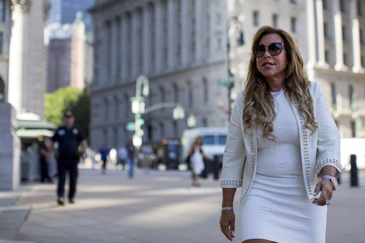
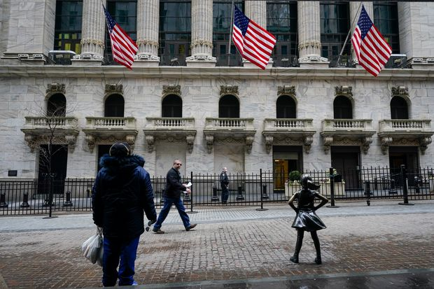
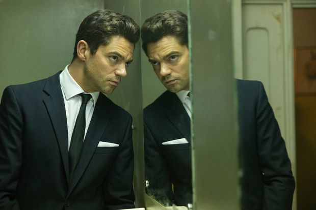
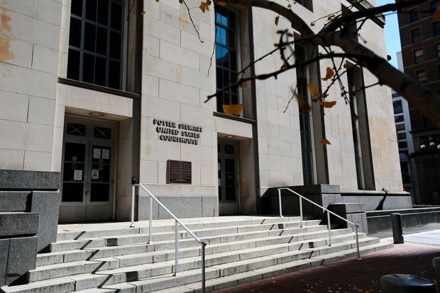
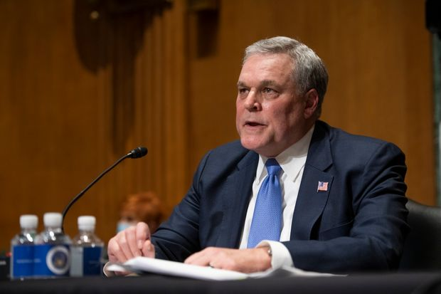
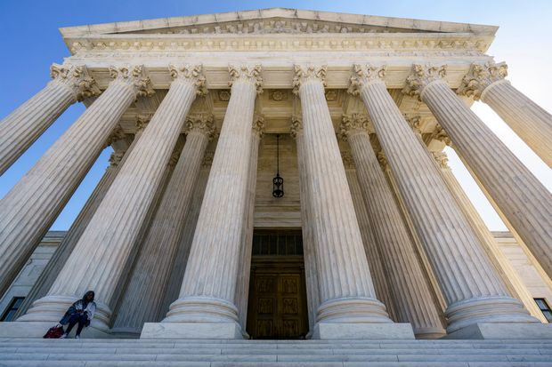
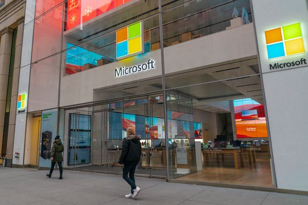
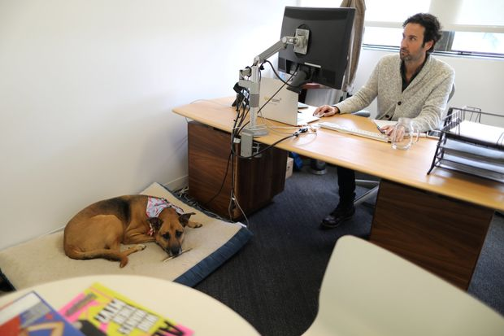
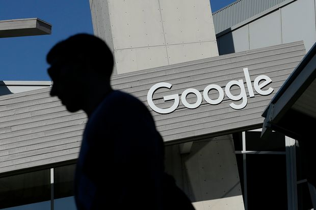
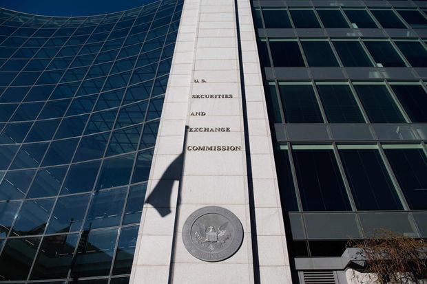

| 时间 | 分类 | 标题 | 副标题 | 正文 | 图片 |
|---|---|---|---|---|---|
| 2021-04-13 19:41:00 | Business | Mexico’s Televisa to Merge Content Business With Univision | The tie-up aims to expand streaming video services in underserved Spanish-speaking markets with SoftBank as an investor | MEXICO CITY—Mexican broadcast and media giant Grupo Televisa SA B agreed to combine its television content business with Univision Communications Inc., creating a new company that will have SoftBank Group Corp. as an investor, the companies said on Tuesday. The tie-up aims to expand streaming-video services in Spanish-speaking markets and marks a new phase in what has been a hot-and-cold partnership over the years between Televisa, the world’s top producer of Spanish-language television programs, and Univision, the largest U.S. Spanish-language network. The creation of Televisa-Univision, as the new company will be called, comes as broadcasters and cable TV companies struggle with rising competition from streaming services with large budgets for ambitious production of films and series, as viewers get more of their audio, movies and video programming directly over the internet. To boost its war-chest, the new Televisa-Univision, will get a $1 billion equity investment by a consortium led by SoftBank Group and which includes the participation of Google Inc. and The Raine Group. Televisa will receive $3 billion in cash for its assets, plus $1.45 billion in Univision equity. That will be financed by Univision taking on $2.1 billion in debt. |
|
| 2021-04-13 19:31:00 | Pro Bankruptcy | Bankrupt Zohar Funds Can’t Block Lynn Tilton’s Deal for Auto Supplier | A bankruptcy judge approved the sale of Global Automotive Systems to the turnaround manager, overruling the Zohar funds she created | The judge overseeing the bankrupt Zohar investment funds refused their request to block their founder, turnaround manager Lynn Tilton, from buying one of their portfolio companies in a sale that leaves them with a roughly $150 million loss on loans to the business. Judge Karen Owens of the U.S. Bankruptcy Court in Wilmington, Del., approved the sale of Global Automotive Systems LLC for $32 million to an affiliate of Ms. Tilton, giving her control of the auto supplier but leaving little for the Zohar funds that own the company. The judge’s decision overruled the Zohars, which objected to the sale terms. In court papers, the Zohars alleged that Ms. Tilton used her position as a lender to GAS to skew the sale process in her favor, manipulating the company’s finances to make herself the only viable bidder. She denied that, saying her bid was the best available and blamed the Zohars’ “own poor decision-making” in rejecting earlier bids she made. GAS is among the many businesses financed by the Zohars, vehicles Ms. Tilton created to channel investor capital into loans to troubled companies she hoped to improve. Value unlocked from her turnaround efforts were supposed to repay the Zohars and their investors. Many of the businesses in her portfolio have shut down, with or without the benefit of bankruptcy, leaving the Zohars with mounting losses. She placed the Zohars under chapter 11 protection in 2018. Since then, a handful of businesses have been sold in bankruptcy court, at prices that hardly dent the Zohars’ $1.7 billion in debt to their investors. |
 |
| 2021-04-13 19:12:00 | Opinion | In Alabama, Black Amazon Workers Vote Their Economic Interest | The failed unionization push highlights growing disillusionment with progressive priorities. | The political left has a complicated relationship with its black supporters. When blacks vote to help elect Joe Biden, they are celebrated. When they vote to help undermine the progressive agenda, they are in the way. Smarter Democratic strategists have been warning for some time that the party has been moving steadily to the left of the average black voter on everything from crime and gay rights to school choice and immigration. Progressive politicians and liberal activists may want to ban charter schools, reduce resources for law enforcement and empty out the prisons—“No more policing, incarceration and militarization,” Democratic Rep. Rashida Tlaib tweeted this week—but polling shows that such ideas have little support among the black rank and file. This growing disconnect between political elites and ordinary blacks was on display again last week when Big Labor’s attempt to organize an Amazon facility in Alabama with a workforce estimated to be 85% black was rebuffed by a vote margin of more than 2 to 1. In what has been described as a major setback for organized labor, 71% of the workers who cast ballots voted against joining the Retail, Wholesale and Department Store Union. The union’s president, Stuart Appelbaum, responded by suggesting the workers had somehow been deceived. “Amazon has left no stone unturned in its efforts to gaslight its own employees,” he told reporters after the vote. The employees themselves offered a different take. They expressed satisfaction with the pay, benefits and working conditions at Amazon and said that paying dues to a union to address any complaints they did have was unnecessary. For years, organized labor has been working to gain a foothold at Amazon, the nation’s second-largest private employer after Walmart . These efforts have failed repeatedly, and no wonder. Amazon offers relatively high pay and good benefits. Blacks and Hispanics are 49.3% of its hourly workers and 20% of managers. And Walmart, which has also been fighting off unionization for years, offers competitive salaries and benefits while having a similarly diverse workforce. Nationwide, black unionization rates are slightly higher than those of whites. This is in part because a higher percentage of blacks work in the public sector, where unionization overall is more prevalent than it is in private business. Among private-sector workers, however, black unionization has steadily declined over the decades, just as it has among other groups. And contrary to the suggestion of labor officials like Mr. Applebaum, it’s not because black workers are confused or have been hoodwinked. Rather, they are acting in their own economic interests, and they happen to be in good historical company. |
|
| 2021-04-13 19:08:00 | Books | ‘The Scout Mindset’ Review: How to ‘Update’ Beliefs | Admitting our beliefs are false can feel like a failure, a sign of weakness. Instead, we should look at changing our mind as an ‘update.’ | Metaphors carry us from one idea that is difficult to understand to another that is easier to grasp. Many subjects are notoriously incomprehensible, making the use of metaphors essential. The Newtonian “mechanical universe” metaphor, for example, transfers us from the difficult idea of gravity and the spooky notion of action-at-a-distance to the more understandable “clockwork” of gears and wheels. Enlightenment thinkers used the mechanical metaphor to explain everything from the human body (with its levers and pulleys of joints, tendons and muscles) to political systems (the king as the sun, his subjects as encircling planets) and even economies: François Quesnay modeled the French economy after the human body, likening the flow of money through a nation to blood coursing through a body’s veins; he compared ruinous government policies to diseases that impeded economic health, and therefore recommended laissez-faire. The workings of the human mind are especially enigmatic, so scientists have long invoked metaphors such as hydraulic mechanisms, electrical wires, logic circuits, computer networks, software programs and information workspaces to help explain what’s going on. In “The Scout Mindset: Why Some People See Things Clearly and Others Don’t,” Julia Galef, a co-founder of the Center for Applied Rationality and host of the popular podcast “Rationally Speaking,” uses a military metaphor of scouts and soldiers. According to Ms. Galef’s divide, the soldier mindset leads us to defend our beliefs against outside threats, seek out evidence to support our beliefs, ignore or rationalize away counterevidence and resist admitting we’re wrong—as that feels like defeat. The scout mindset, by contrast, seeks to discover what is true through evidence, and reasons toward conclusions that lead to a more accurate map of reality—“the motivation to see things as they are,” Ms. Galef explains, “not as you wish they were.” The differences between these two mindsets are striking and, Ms. Galef argues, explain how thinking goes right or wrong. Soldiers rationalize, deny, deceive and self-deceive, and engage in motivated reasoning and wishful thinking to win the battle of beliefs. “We talk about our beliefs as if they’re military positions, or even fortresses, built to resist attack,” the author writes. This soldier mindset leads us to defend against people who might “ ‘poke holes in’ our logic,” “shoot down” our beliefs or confront us with a “ ‘knock-down’ argument,” all of which may leave our beliefs “undermined,” “weakened” or even “destroyed.” Soldiers thus become “entrenched” in their beliefs, resisting “surrender” to an opposing position. |
|
| 2021-04-13 19:07:00 | Opinion | Climate Media vs. Climate Science | The good news is that scientists themselves have started to correct the record. | Joe Biden has put a presidential imprimatur on climate change being an existential threat, and he doesn’t mean in the Jean-Paul Sartre sense of man’s search for meaning in an uncomforting universe. He means the end of humanity, a claim nowhere found in climate science. This is odd because the real news today is elsewhere. Its movement may be ocean-liner-like, the news may be five years old before the New York Times notices it, but the climate community has been backing away from a worst-case scenario peddled to the public for years as “business as usual.” A drumroll moment was Zeke Hausfather and Glen Peter’s 2020 article in the journal Nature partly headlined: “Stop using the worst-case scenario for climate warming as the most likely outcome.” This followed the 2017 paper by Justin Ritchie and Hadi Dowlatabadiasking why climate scenarios posit implausible increases in coal burning a century from now. And I could go on. Roger Pielke Jr. and colleagues show how the RCP 8.5 scenario was born to give modelers a high-emissions scenario to play with, and how it came to be embraced despite being at odds with every real-world indicator concerning the expected course of future emissions. |
|
| 2021-04-13 19:06:00 | Opinion | Pakistan’s Religious Purity Test | Prominent economist Atif Rehman Mian was sacked as the wrong kind of Muslim. |  |
|
| 2021-04-13 19:03:00 | Opinion | Biden’s Afghan Exit | Withdrawing all U.S. troops risks the return of al Qaeda and ISIS. | The White House announced Tuesday that President Biden plans to withdraw all U.S. troops from Afghanistan by Sept. 11. The symbolic but arbitrary date shows the decision is driven less by facts on the ground than a political desire that is also a strategic gamble. History suggests U.S. interests will suffer. The target date 20 years to the day after the 9/11 attacks is meant to underscore that at long last the Afghan war will end. But of course it won’t. The country will see its civil war escalate, as the Taliban seek to retake Kabul and reestablish the Islamic Emirate of Afghanistan. If the country again becomes a sanctuary for al Qaeda and Islamic State, don’t be surprised if U.S. troops have to return as they did in Iraq after Barack Obama’s 2011 withdrawal led to the rise of ISIS. Mr. Biden inherited a bad situation as President Trump had negotiated a May 1 withdrawal date. As the U.S. drew down its forces, the Taliban failed to cut ties with al Qaeda and have captured military bases around the country. Today some 10,000 foreign forces remain, including as many as 3,500 Americans. A U.S. departure means NATO and other partner troops will leave too. The U.S. says it will stay diplomatically engaged, but the withdrawal almost surely means the peace talks between the Taliban and Kabul will fail. The Taliban will feel no pressure to make concessions, and Afghan President Ashraf Ghani has no reason to negotiate his own execution. Whether the U.S.-backed government can survive is unknowable, though it’s unlikely to have much influence outside Kabul. The Afghan army and police may lose confidence without foreign backing, and the Northern Alliance will reform as protection against the Taliban. |
|
| 2021-04-13 18:54:00 | Opinion | The J&J Covid Vaccine Pause | The issue is how best to address public anxiety over rare blood clots. | Soon the biggest barrier to reaching herd Covid-19 immunity will be vaccine fears, not supply. Regulators can sometimes be excessively cautious, but the Biden Administration’s decision to pause Johnson & Johnson vaccinations while scientists investigate very rare blood clots in recipients seems reasonable. Media outlets last week began reporting cases of people who had received J&J’s vaccine developing severe blood clots. One recipient died. It’s not known whether the J&J vaccine caused the clots, but fears are magnified amid lack of information—especially after similar rare clots were linked to AstraZeneca ’s vaccine. The vaccines use similar technology. In a joint statement Tuesday, the Centers for Disease Control and Prevention and Food and Drug Administration said they are reviewing six U.S. cases of cerebral venous sinus thrombosis (CVST) that occurred among the 6.8 million who have received J&J’s vaccine. All six were women between ages 18 and 48, and symptoms occurred six to 13 days after vaccination. This particular brain blood clot is extremely rare in the general population—five individuals per million per year, with higher rates among those under the age of 18—and deadly. “Treatment of this specific type of blood clot is different from the treatment that might typically be administered,” the agencies explained. Heparin—the usual clotting treatment—“may be dangerous, and alternative treatments need to be given.” Now doctors are on high alert for such clots and can prepare appropriate treatment. The CDC plans to convene its Advisory Committee on Immunization Practices (ACIP) on Wednesday to “review these cases and assess their potential significance.” This will let scientists examine commonalities among cases and consider if the vaccine shouldn’t be given to certain individuals who may be at higher risk for clots. |
|
| 2021-04-13 18:49:00 | Opinion | The Shooting of Daunte Wright | The rush to judgment doesn’t serve the cause of justice. | Riots broke out again this week after a police officer fatally shot a 20-year-old black man Sunday in Brooklyn Center, a city of 31,000 north of Minneapolis. Politicians and protesters immediately assumed that racism motivated the shooting, but the facts may prove more complicated, and the rush to judgment doesn’t serve justice. Police say officers pulled Daunte Wright over because of expired registration tags, then discovered an outstanding warrant for his arrest. Wright faced charges for carrying a pistol without a permit and fleeing police, and he failed to show up in court, the Minneapolis Star Tribunereports. Body cam footage shows Wright resisting arrest and trying to get back in his vehicle. “Taser, taser, taser,” shouted an officer later identified as 48-year-old Kim Potter. “Holy s—,” she says seconds later, “I just shot him.” Police Chief Tim Gannon said Monday “it is my belief that the officer had the intention to deploy their Taser but instead shot Mr. Wright with a single bullet” and described the shooting as “accidental.” Ms. Potter and Mr. Gannon resigned Tuesday. The investigation must answer how an officer may have mistaken her gun for a taser, but we’ve seen nothing that suggests racial animus drove Ms. Potter to pull the trigger. Public officials nonetheless rushed to render their verdict. “Now we have another name added to Philando [Castile], Jamar [Clark], George [Floyd], and Daunte will now be added to that,” said Minnesota’s Democratic Gov. Tim Walz, referring to other black men killed by police. Vice President Kamala Harris said Monday that Wright “should be alive today," but “folks will keep dying if we don’t fully address racial injustice and inequities in our country, from implicit bias to broken systems.” |
|
| 2021-04-13 18:47:00 | Opinion | Back to Iran’s Nuclear Future | Israel defends itself as Biden courts Tehran to return to the flawed Obama deal. | ‘America is back” has been a mantra of the early Biden Presidency, and back how is the question. So far regarding Iran it seems to mean back to the future of 2015-2016 and another bad nuclear deal. The U.S. on Wednesday will resume talks in Vienna to revive the nuclear agreement, but the bigger news is the explosion over the weekend at Iran’s Natanz nuclear facility. No one has taken credit, but Israel has been notably public in saying it will do whatever it must to prevent Iran from getting a nuclear weapon. Unlike past cyber attacks, the U.S. was quick to say it had nothing to do with the Natanz attack. A fair conclusion is that Israel feels it must act because it sees President Biden rushing back to a deal that clearly hasn’t stopped Iran from continuing to make progress toward a nuclear breakout. Washington and Tehran are so far speaking through European intermediaries, but the focus of the talks is also back to the Obama future. The Iranians, who outmaneuvered the same American negotiators six years ago, are demanding the removal of all sanctions as the price for a return to the deal. Donald Trump’s sanctions have increased domestic economic pressure on the mullahs, who want access to global oil markets and investment. Iran has spent two years slowly ramping up its violations of the deal—restricting nuclear inspections, activating advanced centrifuges, enriching uranium at a higher purity and stockpiling more of it. This can be reversed, but the increased nuclear knowhow can’t be undone. |
|
| 2021-04-13 18:46:00 | World | John Kerry Says U.S. Will Hold China to Account on Climate Pledges | Ahead of trip to Shanghai, climate envoy says U.S. could use satellites to monitor greenhouse-gas emissions globally | WASHINGTON—U.S. climate envoy John Kerry said the Biden administration won’t compromise with China on economic issues or human rights in its attempts to negotiate a deal to address climate change. Mr. Kerry, in an interview with The Wall Street Journal on Tuesday, said his team is committed to finding ways to force China to be accountable for pledges it makes in continuing negotiations to reduce greenhouse-gas emissions that contribute to climate change. An industrial powerhouse, China is the world’s biggest source of greenhouse gases. Mr. Kerry said satellites and other new technology will allow the U.S. to monitor national emissions around the globe, and noted that European countries have discussed levying a special tax on imported goods based on emissions from their production. “You need accountability,” Mr. Kerry said in his office at State Department headquarters. “We will have enormous visibility, and that visibility has been very effective at creating accountability.” Mr. Kerry made his comments before departing from Washington for three days of scheduled meetings with senior Chinese officials in Shanghai on climate change and economic issues. |
|
| 2021-04-13 18:32:00 | Politics | Pollsters Say They Undercounted Republicans, Trump Supporters in 2020 | Five Democratic groups and Pew say they may need to return to old-school polling techniques like knocking on doors | Self-assessments by two polling groups in recent days conclude that they undercounted Republicans and Trump supporters in 2020 and that there is no firm answer yet for how to fix the problem. The examinations come after many pollsters significantly understated Republican strength in the 2020 presidential and congressional elections, and the findings suggest that a variety of polling methodologies came up short. One report, released Tuesday by five Democratic polling firms, finds that their surveys undercounted voters who viewed former President Donald Trump as “presidential.’’ Another, by the nonpartisan Pew Research Center, concluded that obtaining the proper representation of Republicans in surveys has become more difficult. While the reports suggest several possible sources for the underrepresentation of Republicans and Trump supporters, one leading idea from the groups suggests that the problem will be hard to resolve: Even when pollsters in 2020 reached Republican voters or those in GOP-leaning groups, such as white voters without college degrees, those who chose to answer surveys didn’t represent a full range of views. Those who participated in surveys tended to be less supportive of Mr. Trump, while those who declined surveys tended to more firmly back the former president. That finding suggests that pollsters can’t fix their problem merely by including more voters from any one party or demographic group but will have to find new ways to access the hardest-to-reach voters within several demographic groups. Jill Normington, a principal with Normington, Petts & Associates, which participated in the Democratic study, said the five firms concluded that even when a survey sample properly mirrored the characteristics of the U.S. voter pool, “We were getting the wrong people, at the end of the day.’’ |
|
| 2021-04-13 18:31:00 | Opinion | Is There Virtue in CEOs’ Signaling? | Students debate whether companies should take political stances. | Editor’s note: This week’s Future View discusses why companies are getting political and if it’s a good thing. Next week we’ll ask, “As the school year comes to a close, what class or book had the biggest effect on you and why?” Students can click here to submit opinions of fewer than 250 words before April 20. The best responses will be published that night. A Job for Government Although their corner offices and executive assistants might make them seem invincible, CEOs who don’t perform don’t last. During the 1980s, performance meant profitability. If an executive met the quarterly earnings goals, he avoided termination. This focus on short-term performance had its flaws, but at least executives had clear instructions: make money. In today’s environment, executives are expected to make their firms profitable, environmentally friendly and socially responsible—the triple bottom line, a term coined by British management consultant John Elkington in 1994. The triple bottom line has created expectations of executives that aren’t only vague, hard to meet and outside their expertise, but also sometimes incompatible with profitability. If we want a more efficient and less politicized corporate leadership, expectations must be recalibrated. If Americans want workers to be treated well and the environment to be clean, they need effective government regulation of externalities, not baffled CEOs. —Ryan Bernicker, Bucknell University, finance |
|
| 2021-04-13 17:55:00 | World | Iran Says It Will Enrich Uranium to 60%, in Effort to Strengthen Hand in Nuclear Talks | The move would bring Tehran one step closer to weapons-grade fuel and comes after attack on Natanz facility blamed on Israel | Iran will start enriching some of its stock of uranium to 60% for the first time, one of Iran’s leading nuclear negotiators said Tuesday, after an attack on its main nuclear facility. But the country’s negotiators will continue to participate in talks in Vienna on constraining its nuclear activities in return for a reversal of American economic sanctions on Tehran. Former U.S. officials said that Iran’s announcement appeared to be calculated to fortify Iran’s negotiating hand and counter the notion that its nuclear program had suffered a major setback. The comments from Abbas Araghchi, a deputy foreign minister, followed the apparent sabotage of Iran’s Natanz nuclear facility Sunday, which caused an electrical blackout that destroyed a number of centrifuges. Israeli media reported that the attack was carried out by the nation’s Mossad intelligence agency, though Israeli officials declined to comment. Iran has also blamed Israel. The White House has said the U.S. had no involvement in the Natanz attack. “The Iranians believe their nuclear activity provides leverage in the talks,” said Gary Samore, director of the Crown Center for Middle East Studies at Brandeis University and a weapons-of-mass-destruction expert on former President Barack Obama’s National Security Council. “Since some portion of Natanz appears to have been knocked out for some period, that weakens their leverage, and they have compensated by announcing higher enrichment levels.” Mr. Araghchi was in the Austrian capital to attend a second week of negotiations over restoring the 2015 nuclear deal by bringing Iran back into compliance and by removing sanctions that the U.S. imposed after the Trump administration withdrew from the pact in 2018. |
|
| 2021-04-13 17:50:00 | CFO Journal | Companies Merging With SPACs Face Challenges Around Valuations, Controls | CFOs have to navigate accounting and reporting issues around SPAC deals as regulators loom |  | |
| 2021-04-13 17:46:00 | Markets | Nasdaq Sets Reference Price for Coinbase Listing at $250 | The cryptocurrency exchange would have valuation of about $65 billion | Nasdaq set the reference price for the highly anticipated public listing of Coinbase Global Inc. at $250, which would give the cryptocurrency exchange a valuation of about $65 billion. That valuation would be a significant increase over the $8 billion at which Coinbase was last valued in a 2018 fundraising round. It also would make the company worth more than Nasdaq Inc., which has a market value of about $26 billion, and on par with Intercontinental Exchange Inc., parent of the New York Stock Exchange, at about $69 billion. Shares of Coinbase, the largest bitcoin exchange in the U.S., are set to start trading Wednesday. Coinbase has seen its profitability explode amid a rally in the price of bitcoin and other cryptocurrencies. Last week, the company said it expected its first-quarter earnings to be between $730 million and $800 million—more than double what it earned in all of 2020—on revenue of $1.8 billion. |
|
| 2021-04-13 17:45:00 | Politics | U.S. Troops to Leave Afghanistan by Sept. 11 | President Biden sets deadline for withdrawal to occur two decades after the 2001 terrorist attacks | ||
| 2021-04-13 17:44:00 | A Closer Look | ‘There Is a Rainbow’ by Theresa Trinder, illustrated by Grant Snider | |||
| 2021-04-13 17:38:00 | Politics | U.S. Chamber Urges Lawmakers to Oppose Democratic-Backed Voting Bill | Chamber objects to proposed For the People Act’s curbs on business political activity, saying voting changes should be bipartisan | The U.S. Chamber of Commerce urged senators to oppose a sweeping Democratic-backed voting-overhaul bill, saying it would impose onerous restrictions on political advocacy by corporations and other associations. The Chamber said Tuesday that it would send a “key vote alert” to senators laying out its opposition to the proposed For the People Act and called for bipartisanship in making any voting changes. “The Chamber believes the ability of Americans to exercise their right to vote in accessible and secure elections and to be able to trust in a free and fair outcome is fundamental to who we are as a nation,” said a draft of the Chamber’s letter that was viewed by The Wall Street Journal. “The Chamber is deeply troubled by efforts at the state and federal level to enact election law changes on a partisan basis.” Congressional Democrats’ roughly 800-page bill would make many changes to rules regarding voting and campaign finance. Its proposals include requiring every state to offer early in-person voting and voting by mail, loosening requirements for voter ID and creating independent panels to draw voting districts in each state to end partisan gerrymandering. The bill also would restructure the Federal Election Commission in a way that proponents say would make the agency more effective but critics say would turn it into a partisan tool. |
|
| 2021-04-13 17:29:00 | Television Review | ‘Spy City’ Review: Distrust in a Divided Berlin | In an engrossing Cold War drama on AMC+, Dominic Cooper stars as an intelligence agent tasked with exposing a leaker within British Sector headquarters. | ‘Can anyone trust anyone?” muses British intelligence agent Fielding Scott, his wonderment coming at a point far enough down the mental alleyways of “Spy City” that the answer is obvious. The location is the postwar, pre-Wall, sectored city of Berlin, circa 1961; the KGB is infesting the woodwork (or at least the light fixtures); Fielding’s boss hates him worse than the Soviets do. And he and his girlfriend go back and forth on whether to assassinate each other. You hope his question is rhetorical, or you would wonder how he’d ever found his way down the Bundesstrasse. “Spy City,” created and written by William Boyd, is a logical progression from his novels of diplomacy and espionage (“A Good Man in Africa,” “Restless”). It takes pains to avoid most of the Ian Fleming echoes of Cold War drama, including the concept of cool. Fielding (Dominic Cooper, “Preacher”) is not classically cool. He’s handsome, capable and dresses well. But he’s shifty. Furtive. He’s the only one on the street wearing sunglasses. You wonder why the Stasi doesn’t spend most of its time asking for his papers. But he’s also been burned: A routine handoff of information in a Berlin men’s room turns into an attempt on his life, and the would-be assassin—upon whom Fielding imposes death-by-urinal—turns out to have a British passport. And friends among Fielding’s superiors. None of them knows, or will admit, what happened. But they do know there’s a spy in the ranks at British Sector headquarters. Fielding, a cloud over his head, is assigned to cork the leak. While that particular effort extends through all six episodes of what is a truly international, multilingual production, there are subplots à go-go. (It is the ’60s, after all.) A German scientist in the Russian sector, code name Beethoven, has a navigation system for intercontinental ballistic missiles that he’d like to bring with him to the West. The Soviets would prefer he stay. Fielding’s nervous assistant, Eliza (Leonie Benesch), works in the British sector but lives in the East and is trying to protect her protest-singer boyfriend, Reinhart (Ben Münchow), who won’t stop performing in democratically inclined coffeehouses. (You rather wish he would.) Fielding’s lover, Severine Bloch (Romane Portail), is a French agent, and the two have a past that isn’t too strenuously explored. But she is allegedly spending her off-hours searching for the Nazi who killed her husband during the earlier unpleasantries. Except that the man she kills isn’t that Nazi. And the one she’s chasing may not exist. She seems awfully young to have been widowed in the ’40s. Maybe she never had a husband at all. Alternatively, everyone might be telling the truth, which is what makes “Spy City” as engrossing as it is. The Cold War, which has been deemed endlessly fascinating to judge by how much small-screen time has been devoted to it over the past few years, is evoked by director Miguel Alexandre partly though the intermittent use of bleached-out period footage of Berlin’s street traffic and colorless architecture. He also reflects Fielding’s existential dilemma—Mr. Cooper does make him complex—by scattering red herrings throughout the proceedings. If the camera lingers on a pair of stiletto heels, shouldn’t some evildoer be gaffed on one by the end of the episode? Not necessarily. When Severine asks Fielding, “Do you trust me again?” following some heinous episode of betrayal, she and the show are really asking the question of us. And our answer is an emphatic “Nein.” Recreational distrust is the stuff of “Spy City,” upon which the Cold War heats up. |
 |
| 2021-04-13 17:27:00 | U.S. | Federal Appeals Court Upholds Ohio’s Down Syndrome Abortion Law | Ohio law prohibits doctors from performing an abortion once a patient reveals she is motivated by fears the fetus has Down syndrome | A splintered federal appeals court on Tuesday upheld an Ohio law that makes it illegal for a physician to perform an abortion upon learning that the patient wants the procedure because she fears the fetus has Down syndrome. In a 9-7 vote, the Sixth U.S. Circuit Court of Appeals in Cincinnati allowed Ohio to enforce the law, reversing an earlier ruling by a smaller panel of the court. The statute doesn’t prevent women from terminating a fetus diagnosed with Down syndrome. But it prevents a physician from performing the procedure if the pregnant woman tells the doctor she is seeking the abortion because she has reason to believe the fetus has the genetic disorder. The dispute over the law expands a relatively new front in the legal battle over abortion. The Supreme Court has never reviewed the constitutionality of restraints on abortions performed because of predicted characteristics of the fetus, such as disability, race or gender. Tuesday’s ruling marks the first time a federal appellate court has held that a statute like Ohio’s doesn’t violate the right to an abortion. Republican legislators voted for the law, known as H.B. 214, in 2017. Before it could take effect, a federal judge barred the state from enforcing it while the court heard a lawsuit challenging it. |
 |
| 2021-04-13 17:24:00 | Music Review | ‘Uneasy’ by Vijay Iyer Review: An Assured Trio Takes On Hard Times | A collaboration between the pianist, drummer Tyshawn Sorey and bassist Linda May Han Oh—all composers in their own right—results in a subtle yet powerful album. | ||
| 2021-04-13 17:23:00 | World | Peru Election Pits Fan of Castro Against Authoritarian Ex-Leader’s Daughter | Voters face a choice between a far-left activist who pledges to nationalize foreign mining assets and a candidate who has lost two prior presidential bids | A far-left activist in Peru who pledges to seize foreign mines and the daughter of a former authoritarian president will face each other in a presidential election that gives voters two starkly different ideological options in a country battered by political turmoil and the pandemic. The election pits Pedro Castillo, a 51-year-old former schoolteacher who says he would nationalize mining projects and dismantle a business-friendly economic model, against Keiko Fujimori, whose father ruled Peru with an iron hand. That Mr. Castillo, who leads a Marxist-inspired party that glorifies Fidel Castro, could win office is rattling a business class that has prospered as Peru’s trade-friendly economy boomed for much of the last two decades. Among major investors here are subsidiaries of Anglo American PLC, Newmont Mining Corp. of Denver, and Aluminum Corporation of China . “We’re often told that only political scientists, constitutionalists, erudite politicians, those with grand degrees can govern a country,” Mr. Castillo told supporters recently. “They’ve had enough time.” Speaking to reporters Tuesday, he said he sees this election as a “competition between the rich and the poor...I see a fight between the boss and the laborer, the master and the slave.” |
|
| 2021-04-13 17:19:00 | U.S. | Police Chief, Officer Resign in Wake of Daunte Wright Killing | Minneapolis suburb sees second night of protests and looting after police say officer accidentally shot and killed Wright | BROOKLYN CENTER, Minn.—The Brooklyn Center police chief and the officer who killed Daunte Wright both resigned Tuesday, after a second night of unrest gripped this Minneapolis suburb. The officer, Kim Potter, said in a letter to city officials that she believed it was in the best interest of the community and the police department to resign. Mayor Mike Elliott said at a press conference Tuesday that Police Chief Tim Gannon also resigned. Mr. Wright, 20 years old, was killed Sunday when Ms. Potter accidentally shot him with her gun instead of her Taser during a traffic stop, police said. The killing sparked protests and clashes with police on Sunday and Monday nights. Authorities said early Tuesday that 40 people were arrested for rioting and breaking curfew at police headquarters Monday night. Some businesses that were damaged and looted spent Tuesday cleaning up. Mr. Elliott said during the Tuesday press conference that he was appreciative of Ms. Potter’s resignation, and that he agreed with that decision. He said she notified the city shortly before 10 a.m., and she wasn’t asked to resign. Ms. Potter is a 26-year veteran of the force. |
|
| 2021-04-13 17:12:00 | Opinion | Is Life at NBC News Imitating The Onion? | TV network’s discovery may indicate that America is not full of racists. | An influential U.S. news organization appears close to confirming that America still isn’t full of racists. Brandy Zadrozny of NBC reports the hopeful news: Shocking as this may be to media folk who cling to a bizarre fantasy that all the people who protested the results of the 2020 election are not just sore losers but white supremacists, last weekend’s nationwide flop should help to put newsroom fears to rest. The turnout was so light at last weekend’s “White Lives Matter” rallies that in many cases the protesters were outnumbered by counterprotesters. Ms. Zadrozny reports: It’s not clear how many reporters were in attendance relative to supremacists, but the media presence was robust in a number of locations. According to NBC News: At the pier the “antiracism protesters vastly outnumbered other groups,” reports the Los Angeles Times. At such events it can sometimes become difficult to figure out who’s who. A dispatch in the Seattle Times suggests that some people were at the Huntington Beach Pier not to support the protesters but to protest against the counterprotesters, who included supporters of the Black Lives Matter organization: |
|
| 2021-04-13 15:52:00 | Business | CBS News Chief Zirinsky Nears Deal to Return to Production Roots | Longtime CBS News producer expected to sign production partnership with parent ViacomCBS | CBS News President Susan Zirinsky is nearing a deal to step down after just two years in the role and sign a wide-ranging production partnership with parent company ViacomCBS Inc., according to people familiar with the matter. A search for a successor to Ms. Zirinsky has been ongoing for several months but a candidate has yet to be named. It is expected that she will remain as head of CBS News until then, the people said. Ms. Zirinksy and a CBS News spokeswoman declined to comment. Ms. Zirinsky has been with CBS News for nearly 40 years, and her first love has always been being a hands-on news producer. As head of CBS News, much of her time is spent managing talent and dealing with corporate bureaucracy, and less with actual newsgathering. The new production deal would allow her to return to her roots and create content not only for CBS News and its various shows and platforms but also the new ViacomCBS streaming service Paramount+, a person with knowledge of the pact said. |
|
| 2021-04-13 15:51:00 | CIO Journal | Ford Retools Headquarters for Hybrid Work | Awaiting returning staff: A check-in app, ambient sensors to alert managers of crowded workspaces and videoconferencing carts | ||
| 2021-04-13 15:27:00 | Risk & Compliance Journal | Walmart Compliance Chief to Depart | Daniel Trujillo, the company’s chief ethics and compliance officer, will leave Friday, Walmart says | ||
| 2021-04-13 15:24:00 | Tech | Apple Schedules April 20 Event | New iPads are expected to be among product unveilings | Apple Inc. scheduled an April 20 event dubbed “Spring Loaded,” the tech giant’s latest virtual gathering to unveil new gadgets. The device maker is expected to show off new iPads, among other possible additions to its product lineup, analysts said. Apple didn’t provide specifics on what is in store for the event and didn’t immediately respond to requests for comment. The Cupertino, Calif., company has held similar virtual events during the pandemic to launch products. In October, it unveiled new iPhone 12 models capable of connecting with a speedy 5G cellular network. Apple also had a virtual-only event in September to unveil a new smartwatch offering and an updated iPad Air. Its first virtual conference during the pandemic was for developers in June, at which it said it would begin jettisoning Intel processors from its Macs. |
|
| 2021-04-13 15:16:00 | Logistics Report | Ever Given Customers Face New Payments to Get Shipments Moving | Thousands of containers of goods are tied up in legal claims and centuries-old maritime principles requiring owners to post millions of dollars to share rescue costs | ||
| 2021-04-13 15:13:00 | U.S. | IRS Chief Says $1 Trillion in Taxes May Go Uncollected Each Year | Charles Rettig tells lawmakers more resources are needed to detect fraud, errors |  | |
| 2021-04-13 14:36:00 | World | Iran’s Nuclear Program: How Close Is Tehran to Developing Nuclear Weapons? | Iranian breaches of the 2015 nuclear deal raise fears that the country is paving the way to start work on nuclear weapons, raising pressure on President Biden | After months of deadlock, Iran, the U.S. and the remaining five parties to the 2015 nuclear deal on April 2 agreed to resume negotiations in Vienna to restore the accord. While U.S. and Iranian officials won’t hold direct discussions for now, bringing them to the same gathering in the Austrian capital is a major first step toward salvaging the deal. Iran’s main objective at the talks will be to obtain relief from sanctions imposed by the Trump administration after it withdrew from the deal in 2018. U.S. officials will focus on bringing Iran back into compliance with its commitments in the deal. Iran has in recent months stopped adhering to several key provisions in the 2015 nuclear deal with world powers, reducing the time it would need to produce a nuclear weapon. These steps away from the deal, a response to U.S. sanctions, have put at risk the survival of an agreement that helped remove sanctions on Iran and open it to business with the West. Iran on Feb. 23 said it would no longer grant daily access to United Nations inspectors to its nuclear facilities or provide round-the-clock security footage of its activities at these sites. The U.S. and European powers decided on March 3 to give Iran a last chance to start cooperating with the International Atomic Energy Agency’s probe of its nuclear activities, backing away from plans to formally censure Iran in a bid to revive diplomacy between Washington and Tehran. The curbing of nuclear inspections was Iran’s third breach of the agreement since December. It followed a revelation on Feb. 10 by U.N. watchdog the IAEA which told member states in a confidential report that Iran had begun producing uranium metal, a material vital for nuclear weapons. Due to the limited civilian utility of uranium metal, the disclosure stirred concern among Western officials over whether Iran is preparing to restart work toward a nuclear weapon. |
|
| 2021-04-13 14:27:00 | U.S. | Biden, Lawmakers Pay Tribute to Slain Capitol Hill Officer ‘Billy’ Evans | Officer died after being struck by car driven by man attempting to enter Capitol grounds | WASHINGTON—President Biden and congressional leaders paid tribute Tuesday to the late Capitol Police Officer William “Billy” Evans as his casket lay in honor in the Capitol Rotunda after he was killed in the line of duty earlier this month. Mr. Evans, 41 years old, died April 2 when a man drove a vehicle into a barricade outside the Capitol building, injuring one other officer. Police said the driver, identified as 25-year-old Noah Green, got out of his vehicle and threatened officers with a knife before being shot and killed. “He was defined by his dignity, his decency, his loyalty and his courage,” Mr. Biden said in deeply personal remarks addressed to Mr. Evans’s mother, wife and his two children, 9-year-old Logan and 7-year-old Abigail, who held stuffed animals in their laps. “I buried two of my children,” Mr. Biden said. “My prayer for all of you is that the day will come when you have that memory and instead you smile before you bring a tear to your eyes. I promise you it’s going to come, it just takes a while. It takes a while.” Mr. Evans was remembered as devoted to his family and two children, playing board games, Legos and recently finishing reading the Harry Potter series with them. |
|
| 2021-04-13 13:57:00 | World | Covid-19 Variants Stress Canadian Hospitals | Hospitals in Ontario cancel surgeries, transfer patients to deal with surge | Hospitals in Canada’s most populous province are canceling surgeries, transferring patients and preparing for the possible need to ration care as they face a surge in Covid-19 variants that is putting more pressure on Ontario’s healthcare system than at any other time in recent history. As of Monday, the number of adult Covid-19 patients in intensive-care-unit beds had risen 44% from the beginning of the month to reach 623, according to data compiled by Critical Care Services Ontario. About two-thirds of those patients were on ventilators. Previously, the number of Covid-19 patients in critical-care beds had peaked at 415 in mid-January. “It’s really the battle of a lifetime,” said Anthony Dale, head of the Ontario Hospital Association, an advocacy group for 141 hospitals operating in the province. “I’m quite fearful of what the next several weeks will look like.” The situation in Ontario, where nearly 40% of the Canadian population lives, stands in contrast to that in many U.S. states, where vaccinations have been administered at a faster pace. Canada’s seven-day average of confirmed Covid-19 cases recently eclipsed that of the U.S. on a per-capita basis for the first time since the early days of the pandemic. Hospitals in adjacent New York and Michigan states are also seeing increased Covid-19 hospitalizations, but are under less pressure compared with past waves of infection. The crunch in Canada is due to a surge in new cases of the highly contagious U.K. variant alongside a slow vaccine rollout. Compounding the problem is the province’s low number of acute hospital beds, which have stayed steady over the past two decades despite a growing population. |
|
| 2021-04-13 13:14:00 | Tech | ‘Fortnite’ Maker Epic Games Valued at Nearly $29 Billion in Funding Round | Videogame company raises $1 billion from new and existing investors including Sony Group | “Fortnite” creator Epic Games Inc. is now valued at $28.7 billion after raising more capital, funding that comes just weeks before the videogame company heads to trial against Apple Inc. Epic on Tuesday said it completed a $1 billion funding round that includes an additional $200 million from Sony Group Corp. The company, which also counts Walt Disney Co. and China’s Tencent Holdings Ltd. among its investors, was valued at $17.3 billion as of last August. Its chief executive, Tim Sweeney, remains the company’s controlling shareholder. “We are grateful to our new and existing investors who support our vision for Epic and the Metaverse,” Mr. Sweeney said in a written statement, referring to the concept of a collective virtual shared space. Epic was founded in 1991. In addition to the shooter game “Fortnite,” it makes the Unreal Engine, a suite of software tools for developing videogames and producing special effects for television shows, movies and other types of digital content. It also owns the video-chat app Houseparty and the studios behind hit games such as “Rocket League’’ and “Fall Guys: Ultimate Knockout.” Released in 2017, “Fortnite” quickly became a global cultural phenomenon, especially beloved by teenagers. It is best known for its free “Battle Royale’’ mode, where 100 players duke it out until only one combatant or squad remains. About a year ago, Epic said “Fortnite” had more than 350 million registered accounts. |
|
| 2021-04-13 13:01:00 | Politics | China to Continue Push for Global Power, Press Taiwan for Reunification, U.S. Report Says | Beijing also is seeking to at least double its nuclear-weapons stockpile during the next decade | WASHINGTON—China will press Taiwan to reunify with the mainland as part of Beijing’s across-the-board effort to secure its status as a global power, an annual intelligence report on threats facing the U.S. says. Beijing also is seeking to at least double its nuclear-weapons stockpile during the next decade and will continue pursuing overseas military bases, the report says. China’s Communist Party, the report says, “will continue its whole-of-government efforts to spread China’s influence, undercut that of the United States, drive wedges between Washington and its allies and partners, and foster new international norms that favor the authoritarian Chinese system.” The unclassified report by the Office of the Director of National Intelligence portrays China as the No. 1 national threat facing the U.S., finding that Beijing is a “near-peer competitor” to the U.S. that threatens its leadership in an array of emerging technologies and has leveraged successes curtailing the coronavirus to promote its style of governance to the world. The report, released Tuesday in advance of congressional hearings later this week, says the prospects for a peace deal in Afghanistan are low, because the Taliban are winning on the battlefield and believe military victory is within reach. The Taliban on Monday backed out of peace talks slated to begin this week in Turkey. Mr. Biden is expected to announce Wednesday that the U.S. will withdraw all U.S. troops from Afghanistan by Sept. 11, officials said, revising a Trump administration plan for a withdrawal by May 1. |
|
| 2021-04-13 12:43:00 | U.S. | Chauvin Defense Begins: What His Lawyers Will Try to Do | Eric Nelson calls witnesses to raise doubts about former Minneapolis police officer’s guilt in death of Black man | Former Minneapolis police officer Derek Chauvin’s defense attorney on Tuesday began presenting the case that his client didn’t kill George Floyd but took reasonable measures to restrain a distressed criminal suspect with a sickly heart who posed a danger to officers after poisoning himself with fentanyl. After two weeks of playing defense—largely through the cross-examination of witnesses called by the prosecution—Mr. Chauvin’s attorney, Eric Nelson, called his first witnesses: a police officer and a paramedic who responded to an arrest a year before Mr. Floyd’s death in which he had a medical emergency after swallowing drugs. The trial is unfolding after two nights of unrest in the neighboring city of Brooklyn Center, where police say 20-year-old Daunte Wright was killed by an officer who mistook her firearm for a stun gun. Mr. Nelson asked the judge to ask jurors whether they felt the unrest would affect their decision in the Chauvin trial, which is expected to come as early as next week. The judge denied the request. Mr. Nelson will attempt to rebut a prosecution that has relied heavily on the graphic footage of Mr. Floyd’s arrest and death, which caused widespread protests and riots across the country almost a year ago. Mr. Nelson will seek to raise reasonable doubt about Mr. Chauvin’s guilt by pointing to Mr. Floyd’s resistance to arrest, drug use and health condition as the cause of his May 25, 2020, death, defense lawyers said. |
|
| 2021-04-13 12:28:00 | Whats News World Wide | What’s News: World-Wide | The U.S. budget deficit grew to a record $1.7 trillion in the first half of the fiscal year as a third round of stimulus payments sent government spending soaring last month. Biden and a bipartisan group of lawmakers discussed how to pay for his $2.3 trillion infrastructure package during a meeting at the White House. The president called for a push to strengthen the U.S. chip industry at a meeting with auto and tech executives that he used to pitch the infrastructure proposal. The Minneapolis area braced for further unrest Monday, a day after a police officer in Brooklyn Center fatally shot a Black man in what the suburb’s police chief described as a tragic mistake. Prosecutors called their last witness after 11 days of testimony designed to bolster their argument that former Minneapolis police officer Derek Chauvin murdered George Floyd. |
||
| 2021-04-13 12:26:00 | Tech | Facebook Expands Oversight Board’s Scope to Hear Removal Requests | Move broadens nearly 20-member panel’s purview as decision on former President Trump’s personal account looms | Facebook Inc. is expanding the authority of its independent oversight board, saying the panel will hear users’ appeals on the content they want removed from the company’s platforms. The social-media giant said Tuesday that over the coming weeks, all users will have the ability to appeal content moderators’ decisions to keep flagged content such as posts, comments, photos and videos on Facebook and Instagram. Previously, people were able to make appeals to the oversight board only for content they wanted restored to those platforms. Board decisions are binding, the company has said. Members of the oversight board have called previously for the company to expand their purview to influence a wider range of thorny content decisions that social-media platforms face. Facebook convened the group—which includes nearly 20 professors, lawyers, and human-rights activists from around the world, among others—to consider cases that have the potential to guide future content decisions and rules. Guy Rosen, Facebook’s vice president of integrity, said in a blog post that the company will work to expand the board’s scope over time. The board made its first rulings in January, with some decisions illustrating a willingness to overturn previous content-moderation decisions. But the panel is slated to make its biggest decision later this month when it determines whether the company erred in suspending former President Donald Trump’s personal Facebook account. |
|
| 2021-04-13 12:17:00 | Business | Fake Covid-19 Certificates Hit Airlines, Which Now Have To Police Them | Test results, often required to fly across borders, can be easily manipulated | LONDON—Airlines are battling a scourge of passengers traveling with falsified Covid-19 health certificates. The documents are often the Covid-19 test results required by many countries on arrival. The International Air Transport Association industry body says it has tracked fake certificates in multiple countries, from France to Brazil, Bangladesh and Afghanistan. Border control authorities and police forces have also reported arrests of people selling documents in the U.K., Spain, Indonesia and Zimbabwe, among others. The problem is hitting international flights more than domestic ones, which typically don’t require certification at the moment. Airlines that are more dependent on cross-border travel, particularly those operating in Europe, are growing increasingly alarmed as they look to the summer, when they still hope demand will start to return. The proliferation of fake health certificates is exposing a logistical blind spot, as airlines rush to navigate post-pandemic travel standards and retool their systems to ease compliance—and spur demand. Airlines say their staff aren’t equipped to handle and police all the new health certifications needed and worry the problem will be exacerbated when some countries also start to ask for vaccination certificates. At Brussels Airlines, staff have shared fake certificates that they have come across—including one from an incident last week—to stay abreast of the techniques fraudsters are using. |
|
| 2021-04-13 12:06:00 | Opinion | Masks for Children, Muzzles for Covid-19 News | In the guise of combating ‘misinformation,’ YouTube again censors scientific debate over pandemic policy. | I attended a public-policy roundtable hosted by Florida Gov. Ron DeSantis last month. The point was to discuss the state’s Covid policies in the months ahead. That 600,000 Americans have died with Covid-19 is evidence that the lockdowns over the past year, including significant restrictions on the lives of children, haven’t worked. Florida reopened in May and declined to shut down again. Yet age-adjusted mortality is lower in Florida than in locked-down California, and Florida’s public schools are almost all open, while California’s aren’t. My fellow panelists—Sunetra Gupta of Oxford, Martin Kulldorff of Harvard and Scott Atlas of Stanford—and I discussed a variety of topics. One was the wisdom of requiring children to wear masks. The press asked questions, and a video of the event was posted on YouTube by local media, including Tampa’s WTSP. But last week YouTube removed a recording of this routine policy discussion from its website. The company claimed my fellow panel members and I were trafficking in misinformation. The company said it removed the video “because it included content that contradicts the consensus of local and global health authorities regarding the efficacy of masks to prevent the spread of COVID-19.” Yet the panelists are all experts, and all spoke against requiring children to wear masks. I can’t speak for my counterparts, but my reasoning was a cost-benefit analysis. The benefits of masking children are small to none; the costs are much higher. The scientific evidence is clear. Consider a study from Iceland conducted early in the epidemic when masking was uncommon. The study used a representative sample to track the source of Covid infections. The authors used contact-tracing methods paired with genetic sequencing analysis to establish precisely how the disease spread. The senior author of the study, Kari Stefansson, later told reporters that “even if children do get infected, they are less likely to transmit the disease to others than adults. We have not found a single instance of a child infecting parents.” Many studies in the scientific literature reach a similar conclusion: Even unmasked children pose less of a risk for disease spread than adults. |
|
| 2021-04-13 12:05:00 | Opinion | What to Look For at Congress’s Big Intelligence Gathering | Testimony will shed light on Biden’s approach to Russia, China, terrorism and proliferation. | Top intelligence officials are testifying before Congress Wednesday and Thursday on global threats facing America. Such open sessions, complemented by closed hearings and classified and unclassified written reports, were annual events until President Trump halted them in 2019. He intensely disliked media reporting on testimony about Russian meddling in U.S. elections, reflecting his concern for his personal rather than national interests. These hearings, or any public discussion of intelligence matters, are limited by legitimate concerns for protecting sensitive information and intelligence sources and methods. Even so, open hearings and unclassified reports have proved enormously helpful in public debate. What should this week’s testimony include, and by what standards should it be judged? The principal risk to intelligence integrity is politicization, a charge routinely hurled across the political spectrum. Several new Biden administration officials will testify for the first time this week, so it is timely to stress continued strengthening of the wall between intelligence and policy making. Molding intelligence to fit an administration’s policy preferences is a constant danger, as is arguing that particular intelligence compels a particular policy. The former threat seems easier to spot, but the two are equally pernicious. Only rarely is any intelligence (or information generally, however acquired) such a show stopper that it dictates policy. Data and intelligence analysis or judgments, especially the latter two, don’t end debate but inform it. The hearings’ headline subjects should be China and Russia. How the intelligence leaders handle these strategic threats will speak volumes about their likely future performance. They have the opportunity to provide comprehensive analysis of threats from Beijing and Moscow, similar in some ways to Vice President Mike Pence’s October 2018 speech on China. While we can expect ample commentary on Russian efforts to interfere in U.S. and other Western elections, the sheer scope of China’s efforts to shape U.S. public opinion is of a different order of magnitude, as Mr. Pence made clear. Although it’s politically tempting, witnesses would be wrong to play down Chinese operations in an attempt to score points off Mr. Trump’s unhappiness with discussions of Russian interference. Americans need the fullest possible picture of Beijing’s machinations, especially from the Federal Bureau of Investigation, consistent with classification needs. Moscow’s adventurism in the former Soviet Union is on display as troops mass near Ukraine’s border, and its military presence in the Middle East is growing. Beijing’s expansionism in the South China Sea and elsewhere is also accelerating. Both are major threats in cyberspace. While there are important judgments to be made about Russia’s objectives and capabilities during renegotiation of the New Start Treaty, the intelligence community should also discuss the threats posed by China’s expanding nuclear program. The sheer scope of Chinese and Russian military activity, across all war-fighting domains, hardly figured in the 2020 presidential campaign, and needs underlining now. The intelligence leaders have much to warn about. |
|
| 2021-04-13 12:04:00 | Life & Arts | The Miraculous Measurement of the Muon | New discoveries about an elementary particle could lead to a ‘gold rush’ of new physics. | Nobel Prize-winning physicist Frank Wilczek explores the secrets of the cosmos. Read previous columns here. On April 7, the physics world was startled into glorious confusion by two announcements of a new measurement and a new calculation of the magnetic moment of the muon, published in the journals Physical Review Letters and Nature. The new results, accurate to the level of one part per billion, are the product of multiyear collaborations by large groups of physicists at institutions around the world. You might think that the work of making such precise measurements and calculations is as dull as science gets, but it can make magic happen. Muons are elementary particles that in several fundamental ways resemble the more familiar electrons; for example, both carry exactly the same amount of electric charge. But there are two big differences: Muons are roughly 200 times heavier than electrons, and they are unstable, with a mean lifetime of roughly two microseconds. As exotic particles go, muons are uncommonly user-friendly. They are easy to produce in large numbers at high-energy accelerators. And though a microsecond may not sound like a long time, fast-moving muons can travel a long way before they expire, leaving easily detectable tracks. Though it’s often taken for granted, the fact that we can talk about “the” mass and “the” magnetic moment of the muon, when in practice we sample millions of different particles, is both profound and amazing. Precision measurements so far reinforce our confidence that all muons, like all electrons, have exactly the same properties. Muons are forever rotating—as physicists say, they have “spin”—which is key to many aspects of their behavior. If a muon is exposed to a magnetic field, its rotation axis circles around that field’s direction, similarly to how the axis of a tilted, spinning top circles around the vertical. This top-like motion is called precession. The rate of a muon’s precession in a magnetic field is equal to the product of the strength of the magnetic field, some known physical constants and a number called the magnetic moment. |
|
| 2021-04-13 10:25:00 | Markets | Inflation From a Year Ago Isn’t What Matters Right Now | The jump in consumer prices from last year’s depressed levels won’t register with most people, but that doesn’t mean concern over prices is going away | Raise your hand if you remember what prices looked like one year ago. It is a hard thing to recall, since a year ago was when the novel coronavirus epidemic in the U.S. was entering some of its deadliest days, and people were mostly cooped up at home. What does gasoline cost when you aren’t driving? How much did a meal cost at the restaurant that was closed? Though many Americans might not have been registering what many things outside of hard-to-find toilet-paper rolls cost, the Labor Department’s statistical bureau was keeping track. Its inflation reports showed that consumer prices slipped in March last year from a month earlier, and then continued to fall over the following two months. With the March inflation report released on Tuesday, those reports are now hitting their anniversary. The report showed that overall consumer prices rose by 0.6% from February, pushed up by higher fuel prices, and were 2.6% above their year-earlier level. That marked the largest year-over-year gain since August 2018. Prices excluding food and energy items—the so-called core that economists use to better track inflation’s trend—were up a milder 0.3% on the month and 1.6% on the year. On a year-over-year basis, both overall and core inflation should accelerate in the months ahead as a result of that drop in prices last spring. Commentators have been urging people to ignore the jump in inflation readings that result, but that might be sort of beside the point, since again, a lot of people probably can’t remember what they were paying for stuff when the Covid-19 crisis struck. |
|
| 2021-04-13 10:23:00 | World | U.S. Climate Envoy to Arrive in Shanghai for Meeting With Chinese Counterpart | John Kerry and Xie Zhenhua to discuss climate matters as well as how to support developing countries pursuing low-emissions economic growth |  |
|
| 2021-04-13 10:21:00 | Opinion | Permissive Libel Law Lets Democracy Down | Outright lies don’t further public debate, and vigorous debate is what the Supreme Court thought it was protecting. | Jeremy Lewin provides many good reasons to reconsider New York Times v. Sullivan (1964), which “curtails the ability of public officials and . . . public figures to secure damages for lies about them” (“The Progressive Case for Libel Reform,” op-ed, April 6). Outright lies don’t further public debate, and vigorous debate is what the Supreme Court thought it was protecting. Mr. Lewin doesn’t mention what has always seemed to me to be the most significant way that Times v. Sullivan has negatively affected political discourse: Good people are less inclined to enter the public arena. Why endure the inevitable unscrupulous attacks if there’s no realistic possibility of legal recourse? The quality of public debate isn’t enhanced if our country’s best stay on the sidelines. Em. Prof. Erik M. Jensen Case Western Reserve University Cleveland Regarding your editorial “Reconsidering Times v. Sullivan” (March 23) and Glenn Harlan Reynolds’s “How to Restore Balance to Libel Law” (op-ed, March 25): The quality in public discussion in America has deteriorated significantly via Times v. Sullivan and other related Supreme Court decisions (along with other factors, such as the Telecommunications Act of 1996). As you note, defamation cases by public figures against the press are nearly impossible to win due to the “actual malice” standard, an unusual characteristic for democratic countries. Even for public officials, the odds are against winning. If Sullivan can’t be reversed, then limiting its scope to officials, as Prof. Reynolds suggests, would significantly improve the moral and intellectual quality of political life in this country and strengthen democracy. |
 |
| 2021-04-13 10:17:00 | Opinion | Does Georgia or Baseball Get the Big Error? | The game of baseball will suffer immensely from the turnoff of fans to this overtly political decision. | Fay Vincent, the former Major League Baseball commissioner, is way off base with his statement that “the only people hurt by Mr. [Robert] Manfred’s decision”—moving this year’s All-Star game out of Atlanta—“will be Atlanta’s stadium workers and local vendors” (“Rob Manfred’s All-Star Error,” op-ed, April 7). Mr. Vincent’s loser lineup should also include taxi drivers, hoteliers, restaurateurs, the myriad hospitality workers and the ordinary Atlantans who are in sore need of the taxes that would be collected as a result of the tourism the All-Star game generates. Mostly, though, the game of baseball will suffer immensely from the turnoff of fans to this overtly political decision. Time for an instant replay of this bad move. Alan Bergstein Boca Raton, Fla. For those who object to the response of MLB and certain corporations over the recently passed Georgia voting law, may I offer an alternative? Support Georgia. Put your time and treasure to work to support the citizens of this fine state. Visit Atlanta, a major metropolitan mecca. Visit Savannah, a jewel of the South. Explore the many natural beauties of the state that repose in its parks, beaches and mountains. Meet and get to know the people of Georgia and embrace the warmth and hospitality that they offer. And in so doing, let us remember as a nation that a house divided against itself cannot stand. |
|
| 2021-04-13 10:13:00 | Opinion | NPR Correspondent Defends His Reporting | The record of sharply reduced refugee admissions over President Trump’s entire term is beyond dispute. | In his April 10 op-ed (“Must the Supreme Court Create a Trustworthy Press?”) Holman W. Jenkins, Jr. criticizes my reporting on Obama and Trump refugee policies but gets his facts wrong. Mr. Jenkins argues that, in comparing the Trump and Obama records on refugee admissions, I should have used the 2019 figures to avoid any distortion due to the pandemic. That year, he claims, the Trump administration admitted 92,623 refugees, “a number the Obama team never approached in its best year.” In fact, the Trump administration admitted only 29,916 refugees in 2019, barely half the number the Obama administration admitted in 2011, the year of fewest admissions under President Obama. Mr. Jenkins arrives at his numbers by conflating admitted refugees with those asylum applicants who were found to have a credible fear of persecution. Asylum is granted to people who present themselves at a U.S. border or are already in the country. Under U.S. and international law, the U.S. is legally obligated to grant asylum if an individual is found to have a “well-founded fear of persecution.” Refugees constitute an entirely separate category. They apply for protection while they are still outside the U.S. and are granted admission only at the discretion of the U.S. government. Those who are selected for admission to the U.S. get resettled and are given legal residence through a formal program overseen by the State Department. President Trump repeatedly made clear his displeasure with the refugee resettlement program and drastically lowered the refugee admission ceilings during his years in office. It is true that refugee admissions in 2020 were depressed further as a result of the pandemic, but the record of sharply reduced admissions over Mr. Trump’s entire term is beyond dispute. Tom Gjelten |
|
| 2021-04-13 10:09:00 | Markets | No Need for Panic Over J&J Covid-19 Vaccine Pause | U.S. pause in rollout after blood-clot cases should boost confidence in the safety of Covid-19 vaccines, not erode it | The emergence of possible safety issues with the Johnson & Johnson Covid-19 vaccine is certainly unwelcome news, but it is far too early for either the general public or Wall Street to panic. U.S. health authorities recommended a pause in the usage of the shot on Tuesday, following reports of severe blood clots in six women who received the shot. About 6.7 million people have received the vaccine so far in the U.S. J&J shares traded lower on Tuesday morning, while other vaccine makers such as Moderna rallied. While the headline is scary, especially in a pandemic setting, there is no direct evidence that the vaccine is responsible for these rare cases. Moreover, such a pause is standard practice when possible safety issues arise in a new medication or vaccine. Regulators are historically quite sensitive to safety issues in vaccines, because they are meant for the entire public. In a nonpandemic setting, several years of safety data is typically collected before bringing a vaccine to market. No surprise then that regulators chose to err on the side of caution. For members of the public who are hesitant to take a vaccine, Tuesday’s action should boost confidence, not erode it. It is possible that the regulators will allow J&J shots to resume in short order. But if not, the U.S. government has diversified its vaccine options, a decision that is looking increasingly prescient. As such, there is plenty of supply even if the J&J vaccine is mothballed over the long term. There were roughly 39 million doses of Pfizer ’s and Moderna’s vaccines delivered to care providers but yet to be administered as of Tuesday, according to Centers for Disease Control and Prevention data, and more supply is coming online. There will be new challenges if the J&J vaccine doesn’t rejoin the mix. It requires only one dose, while Pfizer and Moderna each require two. If the J&J shot is no longer an option, the government will need to rethink how to supply rural and other hard-to-reach communities with vaccines. |
|
| 2021-04-13 10:00:00 | Life & Arts | Spring Clean Your Self-Care Routine | Overhaul the way you take breaks, meditate and dress for a new-season boost | After more than a year of pandemic uncertainty, many of us are looking for new ways to relieve stress, and spring is especially ripe for new approaches. Self-care doesn’t have to mean spa appointments and expensive vacations. It can be small blocks of time—as little as five minutes—spent clearing your head. As the seasons shift, experts say now is a good time to observe changes in nature and take in sunshine as a way to renew. Breaks that fit into the day—between calls, meetings or school pickups—act as “pressure-release valves,” says Mayo Clinic psychologist Craig Sawchuk. “Think of a salad bar of different things you could do,” he says—whether taking a walk, reading for enjoyment, or making a great cup of coffee—to take a break. Here are a few ideas: Get some outdoor work done by pulling weeds, potting herbs or planting window boxes. “It doesn’t necessarily have to take a lot of effort,” says Charlie Hall, a horticulture professor at Texas A&M University. Dr. Hall’s analysis of more than 2,000 studies—albeit small ones usually with 50 subjects or fewer—showed that gardening or being around plants often has physical and psychological benefits. |
|
| 2021-04-13 09:58:00 | Tech | Microsoft’s Nuance Gambit Shows Healthcare Is Shaping Up as Next Tech Battleground | Microsoft is spending $16 billion to kick-start growth in the next big thing for tech: healthcare | Microsoft Corp.’s $16 billion deal for Nuance Communications Inc. is the latest sign that the next battleground for technology giants will be in healthcare, an industry whose need to embrace data and software was underscored by the pandemic. The acquisition will help Microsoft tap into Nuance’s big business selling its software to healthcare systems, according to analysts and healthcare executives. Speech-recognition software like that developed by Nuance is emerging as an important new opportunity in medicine as doctors seek to speed up documentation of patient work with dictation rather than getting bogged down taking notes, executives said. “This coming together is about empowering healthcare,” Satya Nadella, Microsoft’s chief executive, said in an investor call. “It’s now very clear that healthcare organizations that accelerate their digital investments can improve patient outcomes and reduce cost at scale.” The pandemic helped showcase healthcare’s potential as a growth area for tech companies, such as the boom in telehealth services. Microsoft will have an ability to use Nuance as a means to sell healthcare customers its more lucrative products and services, such as cloud-computing, analysts said. “The pandemic response by the healthcare industry has proven the value of technology to healthcare delivery,” said Gregg Pessin, a senior research director at Gartner Inc. “All the digital giants are paying attention.” |
 |
| 2021-04-13 09:52:00 | World | NATO Urges Russia to Halt Military Buildup on Ukraine’s Borders | Alliance condemns presence of tens of thousands of troops, faces delicate balance in relations with Kremlin | BRUSSELS—NATO called for Russia to end a military buildup on its borders with Ukraine that has sparked concerns of a major escalation in the conflict between the two countries, which has simmered since the Kremlin invaded in 2014. Jens Stoltenberg, secretary-general of the North Atlantic Treaty Organization, said Russia should withdraw tens of thousands of troops it has massed around Ukraine in recent weeks. “Russia’s considerable military buildup is unjustified, unexplained, and deeply concerning,” Mr. Stoltenberg told a news conference after a meeting with Ukrainian Foreign Minister Dmytro Kuleba. “Russia must end this military buildup in and around Ukraine, stop its provocations, and de-escalate immediately.” U.S. Secretary of State Antony Blinken, also in Brussels Tuesday for consultations with allies, has warned of costs for Russia if it acts aggressively, without giving specifics. “The U.S. stands firmly behind the sovereignty and the territorial integrity of Ukraine,” Mr. Blinken said ahead of a meeting with Mr. Kuleba on Tuesday. |
|
| 2021-04-13 09:47:00 | U.S. | U.S. Seeks to Pause J&J Covid-19 Vaccine Use After Rare Blood-Clot Cases | Drugmaker to delay European shot rollout as FDA and CDC review data involving six reported cases of clotting | U.S. health authorities recommended a pause in the use of Johnson & Johnson ’s Covid-19 vaccine in order to investigate rare but severe cases of blood clots. The U.S. Food and Drug Administration and the U.S. Centers for Disease Control and Prevention announced the move Tuesday, after finding that six women between the ages of 18 and 48 years who got the vaccine had developed blood clots. More than 6.8 million doses have been administered in the U.S., the agencies said. A panel of outside experts will meet Wednesday to review the matter for the CDC, while the FDA will also conduct an investigation. The FDA said it was recommending a pause in the use of the J&J vaccine “out of an abundance of caution.” J&J said Tuesday it is aware of an extremely rare disorder involving people with blood clots in combination with low platelets in a small number of people who received its vaccine. J&J said it is working with health authorities and medical experts. |
|
| 2021-04-13 09:47:00 | Pro Bankruptcy | Boy Scouts, Pressured to End Bankruptcy, Explore Leaving Local Councils Behind | The organization is proposing an alternate chapter 11 plan as a backup in case settlements with abuse victims and local councils don’t emerge | The Boy Scouts of America, under pressure to end a costly bankruptcy case, are exploring an exit from chapter 11 that abandons the youth group’s longstanding goal of protecting hundreds of affiliated local councils from sex-abuse litigation. The Boy Scouts put forth an alternative chapter 11 plan that would resolve sex-abuse liabilities for only the bankrupt national organization, while leaving local councils spread across the country open to thousands of legal claims. The contingency plan isn’t a first choice for the Boy Scouts, which filed for bankruptcy in part to shield the local councils and the wealth they hold from potentially devastating legal exposure over childhood sexual abuse. Since filing for bankruptcy last year, the Boy Scouts have favored a broad deal between abuse victims and local councils, which are tied to the institution but aren’t themselves in bankruptcy. That remains on the table, Boy Scouts lawyer Jessica Lauria said in the U.S. Bankruptcy Court in Wilmington, Del. But if the preferred plan falls to gain traction among victims or can’t clear bankruptcy court, the Boy Scouts would pivot to an alternative version that only covers the national organization, she said. In that scenario, local councils in California, New Jersey, New York and other states would be exposed to the kind of legal action that the Boy Scouts had filed for bankruptcy to resolve. |
|
| 2021-04-13 09:45:00 | Life & Arts | The Future of High Heels Looks Wobbly—at Least for Now | Some women who ditched their high-heeled shoes during the pandemic have no plans to go back. Others are dipping their toes in slowly | Najay Roache, a 34-year-old who works in government affairs in New York City, recently went to her closet to try on her Vince Camuto pumps with four-inch heels for the first time in a year. “I was doing like a saunter step, trying to be cute, and I fell forward,” she says. “It was a huge, messy dramatic fall.” As vaccines roll out and society emerges from quarantines, many women contemplating returning to offices, restaurants and social events are taking a new look at their long-unused high-heeled shoes. Some are dreading or altogether rejecting the idea of going back to pumps after months in house shoes, sneakers and flats. Others can’t wait to get dressed up again and wear their favorite heels, discomfort be damned. Sales of high-heeled shoes fell 45% in 2020, according to market researcher NPD Group, as women had nowhere to wear them. Beth Goldstein, the firm’s industry analyst for accessories and footwear, predicts sales will rise this year, but only modestly, as more women, feeling liberated from the tyranny of heels, stick with more comfortable footwear. Many women had already been moving away from heels pre-Covid with the growing casual-fashion trend. The pandemic accelerated that shift. Brands famous for stilettos and pumps, such as Christian Louboutin and Stuart Weitzman, have been promoting more flats, loafers, sandals and sneakers on their Instagram accounts. |
|
| 2021-04-13 09:43:00 | World | Egypt Seizes Ever Given Ship in Suez Canal, Demands Compensation | Pressure grows on Ever Given’s Japanese owner to negotiate a settlement of roughly $1 billion for damage to the canal and lost business | CAIRO—Egypt has seized the container ship that last month blocked the Suez Canal, the vessel’s owner said Tuesday, amid a dispute over how much compensation the country is owed following the weeklong shutdown of the waterway. The move turns up pressure on Ever Given’s Japanese owner to negotiate a settlement that Egyptian authorities are claiming should be roughly $1 billion for damage to the canal and lost business while the stuck ship blocked a critical artery for global trade. Shipowner Shoei Kisen Kaisha Ltd. said the waterway’s manager seized the Ever Given after obtaining an order from an Egyptian court, comparing the move to an arrest. “They are still talking to us. So we will continue negotiations on compensation,” said Ryu Murakoshi, a spokesman for the company. He declined to disclose the amount under discussion. Osama Rabie, chairman of the Suez Canal Authority, told state-run television Monday that it was demanding payment for the costs of the rescue operation, damages to the banks of the canal and lost revenues. The court order for the seizure claimed the ship’s owners failed to pay $900 million, according to Egyptian state media. “They don’t want to pay anything,” Mr. Rabie said of the Japanese owners. He has repeatedly denied responsibility on the part of Egypt for the accident. |
|
| 2021-04-13 09:37:00 | Markets | China’s Economy Is Still Dependent on Housing and Exports | Despite Beijing’s rhetorical emphasis on new industries and self-reliance, housing and exports continue to drive China’s recovery | The world’s second-largest economy kept chugging along in early 2021 with the help of some familiar drivers: housing and exports. A dip in the latter last month will probably prove temporary. But increasing regulatory ire could weigh on China’s housing market—and industrial metal prices—in the second half. Aside from housing, durable signs of strong domestic demand remain relatively scarce. Exports grew an impressive 30.6% in March from a year earlier, data released Tuesday showed. But the year-on-year data is misleading. Goldman Sachs estimates exports contracted a seasonally adjusted 6.6% month-on-month in March compared with an 8.5% rise for January and February combined. The blip in exports was expected: The nation’s February purchasing managers index showed new export orders falling for the first time since last August. The factors behind that were probably temporary, however, including seasonal weakness related to the Lunar New Year and weakening import demand from the U.S. as American industrial output finally showed signs of catching up with domestic demand in early 2021. And China’s March PMI showed new export orders expanding again. With the U.S. now unleashing another big fiscal stimulus, goods demand in America seems likely to keep outpacing supply for quite some time. Chinese exports will probably bounce back. Chinese domestic demand, meanwhile, looks quite solid—but still remains heavily tilted towards housing and construction, to the chagrin of policy makers who have been trying to tighten the screws on real-estate developers and redirect credit into more productive uses. Import volumes rose month on month, but most growth was driven by industrial commodities, notes Capital Economics, suggesting a pick-up in heavy industry and construction. Meanwhile overall credit growth weakened again in March, but lending to households—traditionally dominated by mortgage lending—is still up sharply over the past several months. And house price growth is accelerating: Prices across 70 cities rose 0.4% on average month-over-month in February, the fastest pace since last August. |
|
| 2021-04-13 09:23:00 | Markets | Credit Suisse Identifies $2.3 Billion at Risk in Greensill Funds | Disclosure increases clarity over the scale of potential losses in the supply-chain finance funds | Credit Suisse Group AG flagged around $2.3 billion in problematic loans in its Greensill Capital funds, giving investors in the funds a more concrete sense of the size of their potential losses from the U.K. firm’s demise. The Swiss bank is liquidating $10 billion in a group of funds it ran with Greensill. In a Tuesday update, Credit Suisse said so far it has gotten $5.4 billion back for investors. The bank said three borrowers are “driving the valuation uncertainty” in the remainder of the four funds’ investments. The three borrowers are metals magnate Sanjeev Gupta’s GFG Alliance; West Virginia Gov. Jim Justice’s coal company, Bluestone Resources Inc. ; and SoftBank Group Corp. -backed construction startup Katerra. GFG companies owe the funds $1.2 billion, while Bluestone owes $690 million. Katerra owes $440 million. The bank is working to recover the amounts it identified, but it isn’t yet clear how much it will eventually get back. |
|
| 2021-04-13 09:20:00 | Business | Jack Ma’s Ant Group Will End Some Practices That Helped Fuel Its Growth | Beijing wants the financial-technology giant to unwind arrangements that gave it an advantage over rivals and banks | In its path to becoming one of the world’s most valuable startups, Ant Group Co. built a complex financial ecosystem that captured huge sums of money and kept millions of people in it by supplying them with credit and managing their investments. Now, Beijing is forcing the Chinese financial-technology giant to scale back its activities and dismantle arrangements that have given Ant a big advantage over its rivals as well as the country’s banks and traditional financial institutions. This week, the People’s Bank of China outlined a five-pronged rectification plan for Ant, which will fall fully in line with regulations by applying to become a financial-holding company overseen by the central bank. Ant, an affiliate of Alibaba Group Holding Ltd. , will be subject to regulations similar to those governing banks, which will curtail some of its growth prospects. Ant’s mobile payments and lifestyle app Alipay, which has more than one billion users in China, has in recent years sought to generate bigger profits from its customers by directing them toward other financial services such as online loans and a giant money-market mutual fund where they can park their money. In the year to June 2020, Ant reported profit of $5.8 billion on revenue of $21.5 billion. Half a billion Chinese citizens used Ant’s microlending services in the year to June 2020, and they had the equivalent of more than $264 billion in outstanding loans at that point. And at the end of last year, more than 690 million people—or close to half of China’s population—were invested in Ant’s flagship money-market mutual fund, which had $182 billion in assets under management. |
|
| 2021-04-13 09:02:00 | Life & Arts | How Journaling Can Help You Live Your Best Life | Just 10 minutes a day of writing can be effective, says an author and life coach who suggests: ‘make yourself the hero in a story of your own making’ | Keeping a journal can be good for us, but does it matter what we write? Lara Zielin, an author and life coach, believes it does. Ms. Zielin, who is 45 years old and based in Ypsilanti, Mich., advises her clients to follow a method of journaling she calls “Author Your Life,” where people think about themselves as characters in a story of their making. This approach can help the hesitant begin writing and break the rut that experienced journal writers can experience when they revisit the same things over and over, she says. “Journaling can be an excavation if you let it, it’s getting to the root of the root of what’s really going on with you and what is really the problem,” Ms. Zielin says. Below, she describes the benefits of writing about yourself in the third person and how 10 minutes a day of journaling can be enough. Edited excerpts: Why and how should someone start journaling? Journaling is really, really good for us. It’s a tool for self-reflection and there are many studies that show it is good for our physical and mental health. I teach my own method but there’s no wrong way to journal. What makes journaling most effective is this idea of welcoming stillness and reflection. Where we get stuck is that in our culture everything is screaming at us to not stop. |
|
| 2021-04-13 09:00:00 | Markets | NovoCure, Fastenal, FedEx, Johnson & Johnson: What to Watch When the Stock Market Opens Today | Futures suggested technology stocks could post gains at the open | Here’s what we’re watching ahead of Tuesday’s opening bell. — Johnson & Johnson shares dropped 2.1% ahead of the bell. U.S. health authorities recommended pausing the use of its one-shot Covid-19 vaccine to investigate rare but severe cases of blood clots. —Shares of other vaccine makers gained. Pfizer was up 1%, Moderna jumped 6.9% and Novavax climbed 7%. — NovoCure shares rocketed 82% higher premarket after the developer of treatments for tumors gave an update on a phase 3 trial of a treatment for non-small cell lung cancer. — Fastenal shares dropped 2.4% premarket after it released its latest earnings report. |
|
| 2021-04-13 08:11:00 | World | Afghan Peace Talks: The Latest on the Historic Negotiations | Afghanistan’s government and the Taliban met in historic, U.S.-brokered talks | In September last year, the Afghan government and the Taliban met in Qatar to kick off their first direct talks to end a nearly 20-year conflict. The negotiations are being brokered by the U.S. as part of attempts to withdraw American troops from its longest war. The talks have since stalled. In April, the Taliban threw up a new obstacle to the process, saying it wouldn’t participate in a U.S.-backed peace summit in Istanbul slated for on April 16. The Biden administration had hoped the Istanbul meeting would accelerate the negotiations and help compel the two parties to agree to a ceasefire that would allow for a U.S. withdrawal. The Afghan war started in 2001, when the U.S.-led coalition invaded Afghanistan in response to the Sept. 11 terrorist attacks. The invasion toppled the Taliban rule, which hosted al Qaeda leader Osama bin Laden, the mastermind behind the attack. The peace talks aim to bring peace to a country that has suffered four decades of bloodshed. Before the 2001 invasion, Afghanistan endured an armed struggle against Soviet occupation in the 1980s, civil war and an oppressive Taliban rule. The talks follow a conditional agreement struck in February 2020 between the Taliban and the Trump administration, which involved a phased withdrawal of U.S. troops within 14 months in return for guarantees that the Islamist movement would prevent al Qaeda and other terrorists from operating in areas under its control. That deadline is fast approaching. President Biden has said keeping the May 1 deadline will be difficult. The Taliban has said if the U.S. doesn’t, the group will no longer be bound by its pledge not to attack American troops. |
|
| 2021-04-13 08:00:00 | Real Estate | Grocery Owners May Struggle to Match Last Year’s Success | As more Americans get vaccinated, they are showing a desire to eat out again and may spend less money filling up their cupboards and refrigerators | Owners of grocery stores were among the biggest real estate winners last year. Now, some property owners worry that the business looks poised to slip this year. Pandemic lockdowns forced restaurants to close and then limit service, but supermarkets and grocery stores were spared because they were deemed essential. Customers stocked up on food and other goods. Those dynamics helped boost U.S. grocery sales by 11% in 2020, more than triple the growth of the previous two years, according to data from the U.S. Census Bureau. But as more Americans get vaccinated, they are showing a desire to eat out again and may spend less money filling up their cupboards and refrigerators. Grocery owners are competing against each other to grow their e-commerce business while delivery companies like Instacart Inc. expand aggressively. And Amazon.com Inc. is entering neighborhoods with its new grocery chain, taking on some stores that had faced little bricks-and-mortar competition. Some of last year’s hardest-hit property types, like hotels and retail centers, have rallied this year in anticipation of pent-up demand for travel and other experiences outside the home. Now, it’s grocery store owners’ turn to face fresh headwinds and new competition. |
|
| 2021-04-13 08:00:00 | Markets | OPEC Sees Oil Demand Boosted by Stimulus and Vaccine Programs | Cartel regained control of oil prices in March, after they crashed last spring | Some of the world’s wealthiest nations are grappling with stubborn coronavirus rates, but a brightening outlook and historic stimulus packages will boost economic activity and oil demand this year, the Organization of the Petroleum Exporting Countries said Tuesday. In its closely-watched monthly market report, OPEC increased its 2021 global oil demand forecast by 100,000 barrels a day and raised its forecast for global economic growth by 0.3 percentage points to 5.4%. The cartel said its increased demand forecast was prompted by forecasts of a better-than-expected second half of the year, thanks to “stimulus programs and a further easing of Covid-19 lockdown measures, amid an acceleration in the vaccination rollout,” largely in the club of wealthy nations known as the Organization for Economic Cooperation and Development. Chinese demand has also remained resilient in recent months, OPEC said. Oil prices rose Tuesday, with Brent crude oil—the global benchmark—up 1.1% at $63.96 a barrel and West Texas Intermediate futures, the U.S. benchmark, climbing 1% to $60.27 a barrel. Upbeat Chinese economic data gave oil a boost early Tuesday, according to Helge André Martinsen, senior oil market analyst at DNB Markets. OPEC and its allies agreed earlier this month to boost their collective output by more than two million barrels a day over the coming months, betting on resurgent demand as they and the rest of the world assess the economic consequences of the pandemic’s trajectory. |
|
| 2021-04-13 07:41:00 | World | Myanmar’s Military Has Many Enemies. Protesters Are Asking for Their Help. | After weeks of killings by security forces, a small contingent is turning to the country’s rebel groups that have long battled the army | SINGAPORE—In mid-March, a 26-year-old activist in a central Myanmar town began receiving phone calls from other young protesters, asking if he could help them slip secretly into the jungle. Wai Moe Naing is part of a small, loose network of people who have begun helping protesters opposing the Feb. 1 coup train with rebel groups who have battled the country’s military for decades. For two months, protesters have watched soldiers and police shoot hundreds of unarmed civilians in daylight and raid their homes by night. The brutal suppression has hobbled mass demonstrations that swept across the country after the coup. A small but growing contingent no longer believes peaceful resistance is tenable, and they are turning to the many armed groups in the nation’s borderlands for help. These groups belong to Myanmar’s ethnic minorities and have fought the military in long-running civil wars in their quest for greater autonomy. Some have now voiced support for the movement seeking to restore elected government, despite an uneasy relationship before the coup when they saw the civilian leadership as unresponsive to their concerns. |
|
| 2021-04-13 07:41:00 | Markets | Oil Majors Face Tough Choices Even With Higher Prices | Financial pressures have eased, but companies still have few strategic options as they eye a lower-carbon future | The recovery in oil prices over the past year has eased financial pressures on big producers, but not strategic ones. They are still working out how to adjust their portfolios to a lower-carbon future. Saudi Aramco’s agreement to sell 49% of its pipelines business to a U.S.-led consortium, announced late last week, points in one direction: Oil companies can sell conventional assets. Midsize European producers Repsol and Eni are considering whether to pursue minority initial public offerings including their green-energy divisions, indicating another route. Europe’s supermajors, BP , Shell and TotalEnergies, each plan to spend billions of dollars annually to build lower-carbon energy businesses. But green energy will remain a small part of their massive operations for years, making up little more than a tenth of earnings by 2030, estimates Kim Fustier, an oil analyst at HSBC. The slow shift from black to green has scared away some traditional oil investors while failing to attract ESG investors that focus on environmental, social and governance criteria. European utilities faced a similar challenge when shifting from coal to renewables: They were only seen as “part of the solution” when about a quarter of their earnings came from clean energy, says Ms. Fustier. For the big oil companies, a more palatable portfolio mix is many years away, leaving them stuck in a no-man’s-land. One solution could be to create separate corporate identities. Green-energy assets trade at a big premium to the oil majors. Repsol and Eni are both considering capturing some of that greenium, which would lower their cost of capital, by selling minority stakes in newly listed retail and renewables divisions this year or next. |
|
| 2021-04-13 07:03:00 | Markets | Uber and Lyft Need a Sharper Turn | Investors should consider that Uber and Lyft’s new driver incentives may be too little, too late | ||
| 2021-04-13 07:00:00 | CMO Today | GumGum Raises $75 Million From Goldman Sachs | The adtech company focuses on contextual advertising, as opposed to ads that target people based on identifiable information |  | |
| 2021-04-13 07:00:00 | Deals | Carlyle to Take Majority Stake in Owner of Beautycounter | Deal values parent Counter Brands at $1 billion | Private-equity firm Carlyle Group Inc. is taking a majority stake in the owner of the popular skin-care and cosmetics brand Beautycounter, executives from the companies said. The investment, which values parent Counter Brands LLC at $1 billion, will be used to increase consumer awareness of the fast-growing brand and bolster its digital-sales platform. Based in Santa Monica, Calif., Beautycounter has positioned itself as a leader in “clean” cosmetics, touting its products as safer for consumers because they exclude more than 1,800 potentially harmful ingredients. The company has a few stand-alone locations and a smattering of partnerships with other retailers. The bulk of its sales, however, come through its website, driven by a team of more than 65,000 independent sellers who promote Beautycounter’s products—often by posting about them on Instagram and other social-media platforms. Beautycounter was last publicly valued at about $400 million in 2018, according to PitchBook. TPG Growth, which first invested in the company in 2014, is among those exiting as part of the deal. |
|
| 2021-04-13 06:50:00 | Markets | Grab to Go Public in Record-Breaking SPAC Merger | Deal values Southeast Asian ‘superapp’ operator at close to $40 billion | Grab Holdings Inc. said it would go public on the Nasdaq Stock Market by merging with a special-purpose acquisition company, securing a near-$40 billion valuation in a new milestone for the SPAC boom that has swept U.S. financial markets. The $39.6 billion deal to list Grab, a ride-hailing, food-delivery and digital-wallet group that operates across much of Southeast Asia, is by far the biggest involving a blank-check company and means Grab’s valuation has more than doubled in just 18 months. The merger also comes alongside a $4 billion-plus fundraising, which is the largest-ever share sale by a Southeast Asian company in the U.S. Singapore-headquartered Grab said Tuesday it would merge with Altimeter Growth Corp. , a SPAC sponsored by Altimeter Capital, of Menlo Park, Calif., confirming details reported earlier by The Wall Street Journal. The Grab merger adds to a frenzy of SPAC-related deal making. A record $99 billion has been raised in the U.S. by a total of 306 SPACs this year, according to SPAC Research data, and some 435 of these vehicles are still seeking a merger target. As part of the deal, more than $4 billion has been committed in a so-called PIPE, a type of funding round that typically accompanies such mergers with blank-check companies. PIPE stands for “private investment in public equity.” Grab will receive a maximum of about $4.5 billion in cash from the transaction. |
|
| 2021-04-13 06:39:00 | World | In Battle With U.S. for Global Sway, China Showers Money on Europe’s Neglected Areas | Goods are arriving in Europe through a new trade corridor consisting of railroads, airport hubs and ports built with Chinese support | DUISBURG, Germany—The struggle between the U.S. and China for global influence has come to Europe’s gritty industrial backwaters, where China is steadily co-opting local economies starting with their railroads. China overtook the U.S. as the European Union’s biggest trading partner for goods last year, a historic turning point driven in part by Europeans’ hunger for Chinese medical equipment and electronics during the Covid-19 pandemic. Increasingly, those goods are arriving in Europe through a new trade corridor consisting of railroads, airport hubs and ports built with Chinese support, often as part of China’s Belt and Road Initiative, the giant global infrastructure effort aimed at binding China more closely to the rest of the world. By greasing the wheels of China-Europe trade, those investments have lifted long-neglected, rust-belt cities in places like Duisburg, Germany, and Liege, Belgium. Western officials, including in the U.S., have accused China of using the Belt and Road to trap poor countries in debt. The Chinese government has denied those accusations. |
|
| 2021-04-13 06:39:00 | Markets | Stock Futures Pause Ahead of Inflation Data | The S&P 500 is poised for muted trading ahead of figures that are likely to show U.S. consumer prices picked up in March | U.S. stock futures held steady Tuesday ahead of fresh data that is expected to show consumer prices climbed sharply in March. Futures tied to the S&P 500 wavered between gains and losses. The broad-market index is hovering near its recent record closing high. Futures on the technology-heavy Nasdaq-100 ticked down 0.1%. Investors in both stocks and bonds are seeking to assess whether the projected U.S. economic recovery will trigger a sharp rise in inflation that may remain for a protracted period. Policy makers have repeatedly said they expect any increase over the next few months will prove to be fleeting. A sharp uptick in inflation expectations earlier this year led to a rise in bond yields, and damped appetite for richly valued technology stocks last month. The U.S. consumer price data for March is due out at 8:30 a.m. ET. “The equity market is a bit stretched in valuation,” said Ludovic Subran, chief economist at Allianz. “If yields are going a bit higher on the back of stronger inflation, a lot of institutional investors could rotate their portfolios out of very risky equities to less risky bonds and still get quite a comfortable margin.” |
|
| 2021-04-13 06:33:00 | Markets | Banks Might Get Partial Immunity to Tax Increases | Higher corporate tax rates will hit banks squarely, but the Biden Administration’s other priorities, like infrastructure and housing, could help lessen the blow | Banks are squarely in line to feel higher corporate tax rates. But they might get some pretty attractive offsets as well from the whole package. Among big companies, banks typically pay a relatively high effective tax rate, in part because they tend to generate a lot of their income in the U.S. So the Biden administration’s proposed jump from a 21% corporate tax rate to 28% would in theory translate into a roughly 6% hit to earnings per share for large banks, versus 5% for the S&P 500 broadly, according to analyst Brian Foran at Autonomous Research. Even if investors are betting that buybacks and reserve releases will boost banks’ bottom line, higher taxes could reduce the value of banks’ earning power. But there are a few factors investors should consider. For one, banks may not be quite so hard hit, at least relatively speaking, as other sectors, like tech, which could face a new minimum levy on their foreign earnings. Moreover, the Biden administration’s proposal to raise tax rates is part of a broader push in U.S. infrastructure, housing and energy. And those particular things could provide some tax-advantaged outlets for banks, partially offsetting the headline rate increase. For example, banks reduced their share of the municipal securities market after the 2017 tax package. U.S. bank holdings of munis as assets dropped from almost $575 billion at the end of 2017 to around $510 billion at the end of last year, according to Federal Reserve figures. Mr. Foran calculates that among six big regional banks, including Fifth Third Bancorp and Regions Financial , tax-advantaged interest and income as a percentage of all pretax income for the group was roughly cut in half, from about 2% to 1%, from 2016 to 2019. Not only does the tax-protected interest income on munis become more attractive at a higher corporate rate, but the muni market could expand should there be a major infrastructure push that leans on such financing. Bank of America analysts recently said they anticipate a “golden decade” for muni issuers driven by policy and tax rates. |
|
| 2021-04-13 06:22:00 | Deals | Chinese Auto Giant Geely Explores SPAC Deals | Multinational company is in talks to sponsor $300 Million SPAC on Nasdaq and is considering another SPAC to float EV maker Polestar | One of China’s largest car makers, Zhejiang Geely Holding Group Co., is making plans to tap into the surging market for SPACs. The multinational company, which owns Geely Automobile Holdings Ltd. , Volvo Car Group and several other electric-vehicle brands, is in talks to sponsor a special-purpose acquisition company that could raise $300 million in a Nasdaq initial public offering, according to people familiar with the matter. In addition, the Hangzhou-based group is considering taking one of its European electric-vehicle subsidiaries public by merging it with another SPAC and boosting its valuation sharply, to as much as $40 billion, the people said. SPACs, also known as blank-check companies, raise money by selling stock publicly and listing on exchanges before finding private businesses to merge with. They have surged in popularity and drawn record sums of money from global investors, Many startups also see mergers with SPACs as a faster and easier way to go public. More of Asia’s tycoons and investment firms have capitalized on the boom in SPACs on U.S. exchanges this year. |
|
| 2021-04-13 06:00:00 | Markets | Nvidia’s Ambitions Could Twist Its Own Arm | Chipmaker’s move into data-center CPU market raises competitive profile but complicates Arm Holdings deal | In one stroke Monday, Nvidia showed why it is a force to be reckoned with in semiconductors—and why its most ambitious deal to date will be a stretch. As part of its annual GTC technology conference, Nvidia announced a new central processing chip, or CPU, called Grace, designed for use in data centers. These are different from the graphics processors the company sells for use in both videogames and data centers. As a CPU, Grace would effectively compete for the data-center slots mostly occupied by chips from Intel Corp. and Advanced Micro Devices. Hence, news of Nvidia’s entry into the data-center CPU market drove the stocks of both Intel and AMD down 4% to 5% Monday, while Nvidia’s own shares rose nearly 6% by the closing bell. Nvidia’s uptick was also helped by the company’s later announcement that revenue for the first fiscal quarter ending May 2 is tracking above the forecast given on its last earnings call in February. That forecast projected total growth of 72%, so the update indicates Nvidia hasn’t been hamstrung by the bruising chip production shortage spanning several other markets across the globe. By comparison, the Grace CPU won’t be affecting sales for a long while. Nvidia doesn’t even expect to begin shipping the chip until sometime in 2023, and the company said Monday that the high-powered processor would serve only a niche segment of the market. But the prospect still makes Intel and AMD investors nervous—and rightly so. Nvidia’s graphics chips are a major component in state-of-the-art data centers, given their prowess at artificial intelligence applications. That segment now generates nearly $7 billion a year in revenue for the company, compared with just $339 million five years prior. Wall Street has responded by making Nvidia the second-most-valuable company in the chip space globally, with a market value more than 40% above that of the much larger Intel. But as Nvidia scales up its ambitions, it will run into more resistance than just its longtime competitors. The Grace chip is based on basic designs from Arm Holdings, the British semiconductor-licensing giant Nvidia is acquiring from SoftBank. That deal was already controversial, as Arm licenses chip designs to nearly all of Nvidia’s competitors—and some of its biggest customers as well. Amazon has its own in-house Arm-based processor called Graviton that is powering a growing volume of workloads at its AWS cloud computing business. Mark Lipacis of Jefferies estimates that Graviton now accounts for about 18% of so-called CPU instances at AWS. |
|
| 2021-04-13 05:30:00 | Risk & Compliance Journal | Investor Pushes Alphabet for Whistleblowing Review | Citing recent red flags, Trillium Asset Management files another shareholder proposal urging tech giant to review protections for employees voicing human rights concerns |  | |
| 2021-04-13 05:30:00 | Markets | Banks, After Bracing for Disaster, Are Now Ready for a Boom | Analysts expect banks to post a big increase in profits, propelled by the release of rainy-day reserves | The accelerating economic recovery is likely to boost bank profits. Encouraged by government efforts to pump money into the economy and signs that Americans are spending more, the largest financial institutions are expected to release some of the rainy-day money they set aside after the coronavirus pandemic hit. That will offer a jolt to their income in the first three months of the year. JPMorgan Chase & Co., Wells Fargo & Co. and Goldman Sachs Group Inc. will disclose financial results on Wednesday. Bank of America Corp. and Citigroup Inc. report Thursday and Morgan Stanley follows on Friday. Analysts forecast that all of them will post first-quarter profits that are far above year-earlier levels. Already, investor expectations are high. The KBW Nasdaq Bank Index, which tracks shares of the largest lenders, is up 27% so far this year, nearly triple the gains of the S&P 500. Banks are seen as proxies for the health of the U.S. economy. Their shares were in the doldrums around this time last year, when global commerce ground to a halt. But over the past few months, the stocks have bounced back. The index returned to a record in March, topping its prior high from 2007. |
|
| 2021-04-13 05:30:00 | Markets | How Payment Processor Stripe Became Silicon Valley’s Hottest Startup | Stripe has turned a humdrum business—helping companies accept credit-card payments—into a blockbuster valuation | The pandemic threatened to clobber Stripe Inc. Instead, it turbocharged the company. Stripe processes payments for e-commerce companies, keeping a tiny cut of each purchase as a fee for its services. When stay-at-home orders early in the pandemic caused spending to plunge and refund requests to skyrocket, the outlook wasn’t great. Then everything moved online. More than 500,000 doctors’ offices, farmers markets and other businesses migrated to online payments and used Stripe to do it. As people worked out at home, redecorated or both, Stripe customers such as Peloton Interactive Inc. and Wayfair Inc. enjoyed blockbuster sales. Stripe’s revenue last year rose nearly 70%, to about $7.4 billion, according to people with knowledge of the company’s finances. Other startups might have flashier apps or more recognized brands, but Stripe showed that it is better to be a workhorse than a show pony. Now sitting atop a $95 billion valuation—the highest for a private Silicon Valley company, according to data firm PitchBook—Stripe is bulking up overseas, preparing to go public and working to build a one-stop financial supermarket for the internet economy. |
|
| 2021-04-13 05:30:00 | Business | Americans Have Too Much Toilet Paper. It Is Catching Up to Companies. | Tissue sales fall to below pre-pandemic levels as consumers work through their stockpiles | After a year in which toilet-tissue shortages left consumers scrambling for squares, sales are plummeting to below pre-pandemic levels. Bath-tissue sales in January fell more than 4% from the same period a year earlier, before the spread of Covid-19 spurred Americans to load up on staples from toilet paper to sanitary wipes, according to figures from NielsenIQ. The decline, which comes even though legions of Americans continue to work and attend school from home, indicates last year’s stockpiling is starting to have an effect on sales. “You never knew when you weren’t going to be able to get it, so every time we went out we got some,” said Marjorie Greenburgh, 62 years old, of New Rochelle, N.Y. “They just kept amassing.” Ms. Greenburgh still has 54 rolls, stored in various places throughout her home: in a guest room, the back of a linen closet, the laundry room in the basement. “I’m not planning on buying for a while,” she said. Demand for toilet paper shot up in the outbreak’s initial weeks, doubling in the second week of March, and remained elevated throughout most of 2020. Americans spent more than $11 billion on toilet paper last year, up from $9 billion in a typical year, according to NielsenIQ. |
|
| 2021-04-13 05:30:00 | Economy | Inflation Likely Accelerated in March as Economic Recovery Gained Steam | Economists expect March reading to signal start of extended upswing in prices | U.S. consumer prices likely picked up sharply in March as the economic recovery gained momentum, partly reflecting higher gasoline prices, according to economists surveyed by The Wall Street Journal. They expect the Labor Department to report Tuesday that the consumer-price index—which measures what consumers pay for everyday items including groceries, clothing, recreational activities and vehicles—jumped 2.5% in the year ended March, and rose a seasonally adjusted 0.5% in March from February. The economists forecast that the so-called core price index, which excludes the often-volatile categories of food and energy, climbed 1.5% over the prior year, and was up 0.2% in March from February. “Inflation in March 2021 is still under control,” said Gus Faucher, chief economist at the PNC Financial Services Group. “It takes time for inflationary pressures to build in the economy.” March’s reading will likely mark the start of what many economists expect to be a monthslong upswing in prices, after nearly a year of muted overall inflation as the Covid-19 pandemic doused consumer spending. Whether this rise proves temporary is one of the key questions for markets and the U.S. recovery over the next year or so, as the Biden administration, Congress and the Federal Reserve continue to provide financial support for the economy. |
|
| 2021-04-13 05:00:00 | Experience Report | Online Proctoring Programs Try to Ease the Tensions of Remote Testing | Proctoring software firms try softening harsh language and improving onboarding processes | ||
| 2021-04-13 05:00:00 | Markets | Gap to Replace Longtime Credit-Card Issuer Synchrony With Barclays | Gap’s deal with the British bank ends a 22-year partnership with Synchrony, the largest U.S. issuer of store credit cards | Gap Inc. is parting ways with its longtime credit-card issuer, Synchrony Financial , and moving the business to Barclays PLC, according to people familiar with the matter. Barclays will take over Gap’s private-label and co-branded credit cards, including Athleta, Banana Republic and Old Navy, the people said. The portfolio includes some 11 million open card accounts, some of the people said, with total balances of roughly $3.8 billion at the end of March. Synchrony has been issuing cards for Gap—one of its five largest retail card partners—for about 22 years. The relationship, one of the bank’s longest-running card partnerships, includes private-label cards that can be used only at company stores and co-branded credit cards that cardholders can use at nearly any merchant. Its Gap contract is scheduled to end in April 2022, according to people familiar with the matter. Gap marks the second major loss for Synchrony in recent years. Walmart Inc. in 2018 decided to end its long-running partnership with the bank, the largest U.S. issuer of store credit cards, and switched to Capital One Financial Corp. The Gap portfolio accounts for about 5% of Synchrony’s $78 billion in total balances. Barclays has been looking to expand beyond the airline, hotel and cruise line credit cards that dominate its U.S. portfolio. The Gap account is appealing because it includes many creditworthy cardholders. Some of the cards, in particular those issued to Athleta and Banana Republic customers, tend to attract more affluent borrowers, according to people familiar with the matter. Slightly more than five million of the roughly 11 million total Gap accounts are used at least once a month, one of the people said. |
|
| 2021-04-13 04:47:00 | U.S. | Daunte Wright Shooting Sparks Anger, Clashes in Minnesota as Chauvin Trial Nears End | Stores were looted and police fired chemicals into crowds Monday evening, a second night of unrest | BROOKLYN CENTER, Minn.—Protesters called for police accountability Monday evening in this Minneapolis suburb, a day after the shooting death of a 20-year-old Black man, Daunte Wright, whose death police described as a tragic accident. The Minnesota Bureau of Criminal Apprehension identified Kim Potter, a 26-year veteran of the Brooklyn Center police force, as the officer who police say accidentally shot and killed Mr. Wright after discharging her gun instead of her Taser during a traffic stop Sunday. Ms. Potter couldn’t be reached late Monday, and a union official declined to comment. Katie Wright, Mr. Wright’s mother, spoke Monday evening at a rally at the site where he was shot by police. At the Brooklyn Center Police Department, about 2 miles away, protesters shouted and banged drums, chanting, “No justice, no peace” and “Our streets, our streets.” Others chanted Mr. Wright’s name. Some threw water bottles at police and set off fireworks. Windows at a Dollar Tree store across the street were broken and the store was looted. Police said protesters were violating curfew and lobbed chemicals at the crowd. Fences and jersey barriers surround the department. |
|
| 2021-04-12 23:01:00 | Business | GameStop Working to Replace CEO George Sherman | Such a change by the retailer would bring a near complete turnover in its C-suite, with many new faces with ties to Chewy added to board | GameStop Corp. is looking to replace Chief Executive George Sherman, according to people familiar with the matter, the latest in a series of changes to the retailer’s leadership team since Chewy Inc. co-founder Ryan Cohen became a board director in January. The effort to replace Mr. Sherman, who has been the videogame retailer’s CEO for about two years, is being led by Mr. Cohen, the people said. The company is focusing its search on candidates with a background in technology or the videogame industry, one of the people said. Mr. Cohen, 35 years old, isn’t planning on taking the role, the person said. Reuters earlier reported on GameStop’s plans to replace Mr. Sherman. At least three top lieutenants of Mr. Sherman have left the company or announced plans to depart within the past few months. The Wall Street Journal reported in February that former finance chief Jim Bellwas forced out of his role, while customer chief Frank Hamlin resigned last month. GameStop has said merchandising chief Chris Homeister is resigning because of diminished responsibilities and will leave during the company’s fiscal second quarter. GameStop has said its board is evaluating the skills of its leadership team and hired a third-party firm to help it in the process. |
|
| 2021-04-12 22:53:00 | World | Japan to Release Low-Radiation Fukushima Water Into Ocean | With storage space running out, prime minister says move is safe, but fishery groups fear reputational damage | TOKYO—Japan said Tuesday it would release water with low levels of radiation from the stricken Fukushima Daiichi nuclear plant into the sea despite opposition from a local fishing industry struggling to recover from the impact of 2011 meltdowns. The plant’s operator, Tokyo Electric Power Co., is running out of storage space for more than a million cubic tons of the water, which contains a radioactive isotope of hydrogen called tritium. Government officials said the level of radiation was a tiny fraction of what people are exposed to in everyday life and Japan’s move followed standard practice among other global nuclear operators. Dealing with the water “is an issue we cannot avoid in proceeding with the decommissioning of Fukushima Daiichi,” said Prime Minister Yoshihide Suga in announcing the move. He called the water release a practical solution and said the government would “ensure safety far in excess of standards.” Representatives of the fishing industry expressed concern about the reputation of seafood caught near Fukushima. “It is nearly certain that there will be damage from rumors,” said Hiroshi Kishi, head of the national fisheries cooperative group, after meeting Mr. Suga on April 7 to discuss the plans. |
 |
| 2021-04-12 20:32:00 | Markets | Regulators Step Up Scrutiny of SPACs With New View on Warrants | Blank-check companies may have to reclassify the instruments as liabilities, SEC says | WASHINGTON—Some special-purpose acquisition companies have improperly accounted for warrants sold or given to investors, securities regulators said Monday, stepping up scrutiny of the popular vehicles. Warrants are a standard part of how SPACs raise money, including from hedge funds and other private investors. The potential return for early investors in SPACs is huge if the company’s shares rise because of various features of the structure, including warrants that give some investors the right to buy more shares at a preset price in the future. SPACs are blank-check companies that raise money from the public with a goal of buying a business and taking it public. If the deal happens, the target company takes the SPAC’s place on a stock exchange, in a transaction that resembles an initial public offering. SPACs have boomed over the past year as many deal makers rushed to start them and take advantage of investors’ thirst for the structure. SPACs have typically classified the warrants on their balance sheets as equity. Under certain circumstances, they should be classified as liabilities, which would require the company to periodically account for changes in the warrants’ value, the Securities and Exchange Commission said in a statement released late Monday. One impact of the SEC’s announcement: SPACs that are affected would have to restate their financial results if the fluctuations are deemed to be material, the SEC said. The Wall Street watchdog has started examining the market more closely as SPACs proliferated this year, raising nearly $100 billion. A senior SEC official said last week that SPACs might not have any regulatory advantages over the standard public offering, signaling the agency would scrutinize the failings the same way they do IPOs. |
 |
| 2021-04-12 19:19:00 | Politics | White House Nominates Women for Terrorism, Army, DEA Roles | President Biden picks Christy Abizaid for top job at National Counterterrorism Center, Christine Wormuth for Secretary of Army and Anne Milgram as Drug Enforcement Administration director | The White House tapped former Pentagon and White House official Christine Abizaid to head the National Counterterrorism Center, one of the agencies the Biden administration has said it plans to use to counter an upswing in domestic terrorism. It also picked Christine Wormuth as its nominee for secretary of the Army, the top civilian job heading the country’s largest uniformed force. Both would be the first women to serve in their roles, if confirmed by the Senate. Ms. Abizaid, who goes by Christy, has discussed a role with the Biden administration since December, a person familiar with the matter said. She previously served for nearly a decade as a counterterrorism intelligence officer at the Defense Intelligence Agency and worked on the National Security Council staff under President Barack Obama. After leaving government, Ms. Abizaid joined Dell Technologies , where she currently serves as an executive in operations. Ms. Wormuth previously served as undersecretary of defense for policy during the Obama administration and as the senior director for defense policy on the National Security Council. She is currently director of the International Security and Defense Policy Center at the RAND Corporation. While the National Counterterrorism Center traditionally has focused on foreign terrorism, under President Biden it is expected to take on a greater role addressing domestic threats, working alongside other federal agencies, current and former officials said. |
 |
| 2021-04-12 19:10:00 | World | St. Vincent Volcano Eruption: What We Know About the Caribbean Disaster | Eruptions could continue for weeks; damage to crops and water the big concern | The La Soufrière volcano on the Caribbean island of St. Vincent began a series of explosive eruptions on April 9, sending clouds of hot ash some 20,000 feet into the air, blanketing much of the island in ash and causing water and electricity outages. The latest and biggest eruption so far took place early on Monday, April 12, when the volcano sent deadly clouds of hot gas, ash and stones down the mountainsides, according to Richard Robertson, professor of geology at the University of the West Indies Seismic Research Centre. “I suspect that the buildings and the structures that are on the mountain are destroyed, damaged, mashed up,” said Mr. Robertson in an online interview with St. Vincent Prime Minister Ralph Gonsalves. “I shudder to think if any living creatures were on that mountain. Because anything that was there, man, animal, anything…they are gone.” So far, there are no reports of deaths or injuries. Some 16,000 residents near the volcano were evacuated a day before the eruptions began, as scientists grew concerned about growing activity on the volcano, which killed an estimated 1,600 people during a violent 1902 eruption. But an unknown number of residents have declined to be moved, according to island officials. The explosions at the 3,864 foot volcano could continue for days or weeks, according to the UWI Seismic Research Centre. |
 |
| 2021-04-12 19:06:00 | World | Arab-Israeli Dentist Holds Sway Over Israel’s Next Government | Islamist leader Mansour Abbas embraces unlikely role of kingmaker, as Netanyahu tries to build a coalition after another deadlocked election | TEL AVIV—The man who could determine who forms Israel’s next government is a 46-year-old Arab-Israeli dentist. Mansour Abbas controls four seats in Israel’s 120-member parliament through his Islamist party, Ra’am. He is the first leader of an Arab-Israeli party to declare he would support any government ready to help the country’s disadvantaged Arab minority and, after March’s close-fought election—the country’s fourth in two years—again left Prime Minister Benjamin Netanyahu struggling to cobble together a ruling coalition, he could make an unlikely kingmaker. “I don’t want to be part of any bloc, right or left. I am here in a different bloc—the bloc that voted for me to serve my people,” Mr. Abbas said in a speech a few days after the vote. Yohanan Plesner, president of the Jerusalem-based Israel Democracy Institute, said Mr. Abbas’s willingness to support Mr. Netanyahu or another contender is a potential game-changer for Israeli politics. Until now, Arab-Israeli parties have largely focused on the historic conflict between Israel and the Palestinians and have been reluctant to play a role in any Israeli government. Only once has an independent Arab-Israeli party supported a ruling coalition. |
 |
| 2021-04-12 19:01:00 | World | Ecuador’s New Leader Needs Help From U.S., but China Will Stay Close | President-elect Guillermo Lasso will inherit an economy in crisis following one of Latin America’s worst Covid-19 outbreaks | The election of a market-friendly banker to Ecuador’s presidency will provide a new ally for the U.S. in Latin America, a region awash with populist leaders whose priorities often don’t align with Washington’s. But Guillermo Lasso, who on Sunday handily beat his leftist rival, will also need to court the Biden administration’s biggest rival, China. Mr. Lasso, who is 65, has the challenge of digging his country out of its worst economic crisis in a generation, product of a Covid-19 pandemic that has killed more than 17,000 people. “Lasso, if nothing else, is very pragmatic, and in Ecuador today that demands close relationships with the United States and also China,” said Michael Shifter, president of the Inter-American Dialogue, a Washington-based policy group. “The country is in dire straits, and taking sides or excluding one of the countries is not realistic.” Ecuador is now so saddled with debt to Beijing that public coffers are nearly empty, forcing the country to restructure debt with private creditors and take a $6.5 billion bailout from the International Monetary Fund. Under President Rafael Correa, who served until 2017 and guided his country away from the U.S. and toward China, Beijing’s largess built everything, from dams to mines and hospitals. The debt load is huge—$18.4 billion, the third highest in Latin America and behind two far bigger countries, Brazil and Venezuela, according to the Inter-American Dialogue. |
 |
| 2021-04-12 18:45:00 | A Closer Look | Selections from ‘Have You Ever Seen a Flower?’ by Shawn Harris | |||
| 2021-04-12 18:39:00 | Opinion | The Green New Deal, in Disguise | Biden’s ‘infrastructure’ bill is really a plan to remake the economy. | Candidate Joe Biden emphatically denied that he supported the Green New Deal. As with so much else, President Biden is now a convert. His $2.3 trillion infrastructure plan contains enough spending and industrial planning that it amounts to the Green New Deal in disguise. Listen to Rep. Alexandria Ocasio-Cortez, who two weeks ago claimed maternity for the President’s plan. “As much as I think some parts of the party try to avoid saying ‘Green New Deal’ and really dance around and try to not use that term, ultimately, the framework I think has been adopted,” the progressive heroine from Queens boasted. The details prove her point. Mr. Biden is pitching his plan as having a big economic return on federal investment—and better roads, bridges and ports could increase productivity. But more than half of his plan is dedicated to reducing CO2, with a goal of eliminating fossil fuels with a mix of federal spending, subsidies and regulation. This is a political project with suspect returns. • Start with $213 billion to build and retrofit two million energy-efficient homes and buildings. These putative “upgrades” would be financed by federal grants, tax credits and the economically inefficient Weatherization Assistance Program (WAP). A 2018 study in the Quarterly Journal of Economics of the WAP in Michigan found that its upfront investment costs are about twice the actual energy savings. “Even when accounting for the broader societal benefits derived from emissions reductions, the costs still substantially outweigh the benefits; the average rate of return is approximately −7.8% annually,” the study found. |
|
| 2021-04-12 18:35:00 | Opinion | Putin and ‘Consequences’ | Putin masses troops near Ukraine in an early test for Biden and the G-7 allies. | Most Americans haven’t noticed, but the world is becoming a more dangerous place by the day. The hottest current spot is Russia’s border with Ukraine and the Black Sea, where the Kremlin has amassed more forces than any time since its invasion of the Donbass region when Joe Biden was Vice President. Vladimir Putin’s ambitions aren’t clear, though some think he wants to control the entire Black Sea coast, further squeezing Ukraine. An invasion to grab more Ukrainian territory is also possible. The U.S. Navy has dispatched two ships to the region. On Monday the U.S. also joined the other G-7 foreign ministers asking Mr. Putin to cease and desist: “These large-scale troop movements, without prior notification, represent threatening and destabilizing activities. We call on Russia to cease its provocations and to immediately de-escalate tensions in line with its international obligations.” Mr. Putin has never been one for “international obligations,” so don’t expect the G-7 to scare him—even when the foreign ministers also demand, as they did, that he follow “the procedure established under Chapter III of the Vienna Document.” International law: Such a lovely fiction. Secretary of State Antony Blinken was somewhat more forceful Sunday on NBC’s “Meet the Press”: “So the question is: Is Russia going to continue to act aggressively and recklessly? If it does, the President has been clear there’ll be costs, there’ll be consequences.” |
|
| 2021-04-12 18:35:00 | U.S. | Derek Chauvin Prosecutors Near End of Case in George Floyd’s Death | Defense will try to raise reasonable doubt as it begins presenting witnesses on Tuesday | MINNEAPOLIS—Prosecutors called their last witness Monday after 11 days of testimony designed to bolster their argument that former Minneapolis police officer Derek Chauvin murdered George Floyd by kneeling on his neck and back for more than nine minutes. The widely seen video of the May 25 incident sparked outrage and unrest across the country, depicting Mr. Floyd, a 46-year-old Black security guard, handcuffed and lying on his stomach as Mr. Chauvin knelt on him. Mr. Chauvin, 45, has pleaded not guilty to charges of second- and third-degree murder and manslaughter. Prosecutors are expected to formally rest their case on Tuesday, a spokesman said. Eric Nelson, Mr. Chauvin’s attorney, will then try to raise reasonable doubt in the jurors’ minds, presenting evidence that he has said will show that Mr. Floyd died of a drug overdose and a heart condition. Judge Peter Cahill said he expected closing arguments would begin on Monday. In the final day of prosecution testimony, the team led by Minnesota Attorney General Keith Ellison touched on the two main pillars of its case. A cardiologist said Mr. Floyd died of a lack of oxygen, and used the video and medical evidence to rule out other factors, including his drug use or a heart attack. A law professor who studies police use of force testified that Mr. Chauvin faced a limited threat from the handcuffed Mr. Floyd that fell to zero after he stopped breathing even as Mr. Chauvin continued a dangerous type of restraint. |
|
| 2021-04-12 18:33:00 | Opinion | Illinois Democrats vs. Chicago | Pritzker shows Mayor Lightfoot that public unions are his priority—school reopening, not so much. | Most fights in one-party states are internecine. In Illinois, the Democrats who control Springfield have all but declared war on Chicago Mayor Lori Lightfoot, who is trying to prevent her city’s further decline. The Chicago Teachers Union is threatening to walk out—again—over the school district’s plan to reopen high schools next week. “Critical sticking points include accommodations, high school schedules that minimize virus transmission, remote work—particularly since the majority of students will remain remote—and vaccines for high school students and their family members,” the union said Monday. The union would rather not reopen at all this school year. And thanks to legislation signed by Gov. J.B. Pritzker, the district can’t require it. The statute repeals part of an Illinois law that had restricted the teachers’ right to strike over subjects other than wages and benefits. Now teachers can walk out over schedules, remote learning or even child-care subsidies. While the union fought reopening elementary and middle schools earlier this spring, teachers risked having their pay docked if they struck. Now if the district pushes to reopen high schools, the union can call a strike with impunity and shut down all schools. Ms. Lightfoot strongly opposed the bill. “Now is not the time to change the rules of engagement,” she wrote to legislators. “CPS and CTU agreed on a 5-year contract in 2019. It would be unprecedented for the General Assembly to make substantial changes to the bargaining relationship during the terms of this agreement.” |
|
| 2021-04-12 18:31:00 | Opinion | Great Schools Are the Solution to Educational ‘Segregation’ | New York could replicate Success Academy’s winning model, but standing up to the bureaucracy will take courage. | New York It would be comic if it weren’t so tragic. A 2019 University of California, Los Angeles study awarded New York City’s public schools first place in segregating black students and second in segregating Latino students. How is this possible? How could the schools in a city dominated by the left and led by Mayor Bill de Blasio, a progressive standard-bearer, be more segregated than those in states where Jim Crow laws once reigned and Confederate monuments still stand? The answer isn’t that New Yorkers are especially prejudiced but rather that we have a shortage of good schools. At most of the city’s public schools, a majority of students either aren’t proficient in reading and math or fail to graduate with the skills necessary to succeed in college. Understandably reluctant to send their children to such schools, affluent families find better options either by moving to neighborhoods zoned for excellent schools or paying to prepare their children for admissions tests at selective schools. And this results in segregation since these affluent families are disproportionately white. Predictably, Mayor de Blasio’s solution is redistribution: Spots at good schools must be redistributed from the “haves” to the “have nots” by using new admissions criteria reverse-engineered to produce the required result. What this ignores is the supply problem. If you don’t create additional good schools, restricting access to the existing ones will merely force well-off families out of the public school system altogether. The challenge is that New York’s pre-K programs are weak, so children enter school with wildly varying levels of academic preparedness. This makes it hard to create racially and economically diverse schools that meet the needs of all students. But it’s not impossible. I know because I’ve done it many times over. |
|
| 2021-04-12 18:30:00 | Life & Arts | U.K. Strain Doesn’t Result in More Severe Covid-19 Among Hospitalized Patients, Study Finds | Researchers confirmed earlier findings of the B.1.1.7 variant’s contagiousness, but found it didn’t lead to more deaths or patients requiring ventilators in the study | The coronavirus variant first identified in the United Kingdom spreads more easily than older strains but doesn’t lead to more severe disease among hospitalized patients, a new study found. People infected late last year with the variant, known as B.1.1.7, had more virus in their bodies than patients infected with older strains, a sign the newer variant is more infectious, according to the study published online Monday by the medical journal The Lancet Infectious Diseases. But the patients hospitalized with B.1.1.7 didn’t die at higher rates or have worse outcomes overall. The findings add to scientists’ understanding of B.1.1.7’s impact, which has become especially important now that the strain has come to dominate cases in the U.K., U.S. and some other countries. “If you need hospitalization, you’re not worse with this variant compared to the previous virus strain,” said Eleni Nastouli, a clinical virologist and pediatrician at University College London and senior author on the paper. “Of course, if you’re requiring hospital admission for Covid, that is a worry,” she added. “But it’s not more than the previous strain.” |
 |
| 2021-04-12 18:29:00 | Opinion | The Buttigieg Infrastructure Switcheroo | His definition of the term is not what the American people think it means. | During his Monday Oval Office meeting with Republican lawmakers to seek GOP support for his $2 trillion infrastructure bill, Joe Biden pushed back on the idea that the meeting was no more than bipartisan “window dressing.” The president calls his plan “a historic investment” that will redress America’s “crumbling infrastructure” and says he’s willing to negotiate. But a recent slip by Transportation Secretary Pete Buttigieg reveals that what the Biden administration means by infrastructure is not at all what the American people think it means. Mr. Buttigieg is one of the five cabinet secretaries the president has designated to sell the plan to the American people. In an interview last week with TheGrio.com, he declared “there is racism physically built into some of our highways,” and that this racism was a “conscious choice,” not “just an act of neglect.” If this is truly what Mr. Buttigieg and the administration believe, the trillions they are about to spend will almost certainly end up going less to actual infrastructure needs than some as-yet-to-be defined measure of “equity.” Perhaps Mr. Buttigieg has a case. If so, he and the president should be more forthright in detailing exactly what the administration means when it says the American Jobs Plan “prioritizes addressing long-standing and persistent racial injustice.” Is this limited to targeting “40 percent of the benefits of climate and clean infrastructure investments to disadvantaged communities”? What other agendas might they be piling on here? Because when most Americans hear the word infrastructure, they think of physical structures—roads, bridges, airports, power lines—with clear operational benefits. Infrastructure projects of this sort are popular because people can at least see something tangible for their tax dollars. The administration understands this, which is why, even though roads and bridges are only a fraction of this bill, whenever its salesmen get in trouble pitching it, that’s right where they run. Mr. Buttigieg’s appearance on “Fox News Sunday” is a good example. Host Chris Wallace opened by hammering the secretary for not being “straight” with the American people in claiming the U.S. is ranked 13th globally for infrastructure. (He later also forced Mr. Buttigieg to concede that his estimate that the bill would create 19 million new jobs is not true. The honest estimate is closer to 2.7 million.) |
|
| 2021-04-12 18:27:00 | Books | ‘On the House’ Review: John Boehner Remembers | Former House Speaker John Boehner doesn’t understand why House Republicans went mad. Maybe it had something to do with him. | John Boehner, the long-serving Republican congressman from Ohio, once had Nancy Pelosi’s job, though neither her ruthlessness nor her high profile. He left politics after serving almost five years as House speaker and now lobbies for marijuana legalization. His memoir is a mildly entertaining collection of homespun reminiscences of a middle-class upbringing, madcap anecdotes about Washington political life and profane barbs aimed at former adversaries. Mr. Boehner isn’t remembered as an effective House leader, but he was among the most plainspoken and least pretentious lawmakers on Capitol Hill. In any case, it’s hard to dislike a man who embraces his reputation as a chain smoker. There must be few quicker ways to make oneself repellent to the nation’s well-heeled political class, and yet he smoked his way all the way to the top legislative office in the land. Unless I’m mistaken, Mr. Boehner wrote this book himself. He could have used a ghostwriter. Every page is heavy with stock phrases, and the author is constantly remarking on things he’ll “never forget as long as I live.” Occasionally the writing is dreadful. Recalling an episode in which Mrs. Pelosi essentially took a committee chairmanship from the legendary powerbroker John Dingell, Mr. Boehner remarks that she “gutted Big John Dingell like a halibut she found floating around San Francisco Bay.” “His entrails were left on display for everyone in the House of Representatives to see,” he goes on. Still, “I don’t think Nancy relished mounting Dingell on her wall.” Later, the reader will be glad to know, the author sees Mrs. Pelosi’s “iron grip on power backfire.” The Washington press corps never cared much for Mr. Boehner, who had the misfortune of leading the Republican House during the tenure of the beloved Barack Obama, but the former speaker has attracted lavish media attention for “On the House: A Washington Memoir.” He has done this by the simple expedient of saying about the GOP what the news media says of it every day: namely, that it has become extreme and perverse and inhabited by “crazies” and “kooks.” That thesis is not without evidence, but Mr. Boehner does little more than state it in several different ways. By “crazies” and “kooks”—or “nuts,” “far-right knuckleheads” and “the freak show set”—he is referring mainly to Republicans who first won office in 2010 and afterward, especially members of the conservative Freedom Caucus. Mr. Boehner took the speakership in 2011 and found himself between a fractious House majority and an administration that barely hid its contempt for Republicans. It was always going to be a difficult job, and it was made impossible by a coterie of House conservatives who badly overestimated their bargaining power. In 2013, for example, Freedom Caucusers and their correlatives in the Senate said they would vote to raise the debt limit only at the price of repealing ObamaCare, which was obviously never going to happen. Mr. Boehner rightly calls it “a dumbass idea.” Mr. Boehner’s criticisms of his former antagonists on the right have almost exclusively to do with tactics, not with substance. He fails to acknowledge the distinction, although he insists repeatedly that he agreed with their stated goals. “I was one of the biggest evangelists for fiscal discipline there was,” he claims. How is it, then, that he can brand both the Freedom Caucus and the “Squad” as “political terrorists”? What distinguishes the members of the Squad, foremost among them Alexandria Ocasio-Cortez, isn’t their willingness to pursue traditional Democratic goals by immoderate methods but their embrace of radical progressivism. The media buzz surrounding Mr. Boehner’s book has happily ignored this distinction and presented “On the House” as more evidence that the GOP has moved dramatically to the right. In fact, the party hasn’t moved much at all on policy, but it has become far more aggressive on tactical questions. Nor does Mr. Boehner exhibit the slightest curiosity about why, as he puts it, “the crazies came to town.” They just did, in his telling. |
 |
| 2021-04-12 18:19:00 | Opinion | Politics Is Risky Business for CEOs | It’s imprudent to weigh in on issues that don’t directly affect the company. | A few CEOs have expressed their point of view about the new Georgia voting law. They have issued statements indicating their opposition on the basis that the law will suppress voting. Other senior executives, retired and active, have joined them. I know most of them by reputation and some personally. They are people of goodwill, who sincerely care about the nation, their companies and their employees and customers. Most have done excellent work as leaders of their companies. All have my respect and I believe have earned the respect of the public. But I believe they are wrong to take public positions on this law. I believe both that voting ought to be relatively simple for citizens and that verification of eligibility to vote should be strict as a matter of principle. It is clear that any verification of ballot integrity will increase difficulty. In my view, the Georgia law reaches a reasonable trade-off between those two objectives. But the reason I think CEOs should be silent on this issue isn’t because I disagree with their judgment on the merits. It’s because I think it is wrong for executives to take a company position on public-policy questions that don’t directly affect their business, for four reasons. First, while these CEOs have the right to their own opinions, they can never speak merely as individuals; they always speak for and represent the companies they head. As CEOs they have the right, and perhaps the obligation, to speak out on matters affecting their organizations, but unless they have asked their boards for approval before speaking, they don’t have that right on unrelated matters. Second, inevitably their announcements on purely political issues will alienate many of their employees and customers. Those positions will always lead to unintended consequences. In the Georgia situation, it immediately prompted Major League Baseball to move the All-Star Game to Denver, which then brought on charges of hypocrisy because of baseball’s close ties to two dictatorships—Cuba and China. It also generated calls to boycott two major Atlanta-based companies. This won’t be the end of the backlash. |